Este capítulo desarrolla la propuesta de Service Compliance a partir del análisis competitivo y de la investigación realizada con los dos segmentos objetivo: operarios de limpieza tercerizada y supervisores/coordinadores. Los hallazgos se sintetizan mediante artefactos de Needfinding, se convierten en requisitos del producto y sirven como base para el diseño estratégico y táctico de la solución.
Para analizar el espacio competitivo se seleccionaron tres productos digitales relacionados con la supervisión de servicios en instalaciones, las inspecciones de limpieza, el trabajo de campo y la gestión de proveedores: eGenya, OrangeQC y ServiceChannel. La selección permite comparar a Service Compliance con una alternativa regional de Facility Management, una solución especializada en control de calidad de limpieza y una plataforma empresarial de gestión de facilities.
El análisis busca identificar qué necesidades ya son atendidas por productos existentes y dónde puede diferenciarse Opervia. La comparación evita considerar como ventaja exclusiva mecanismos comunes de la industria, (como fotografías, QR, GPS, checklists u operación offline) y se concentra en la trazabilidad del cumplimiento.
| Aspecto | Service Compliance | eGenya | OrangeQC | ServiceChannel |
|---|---|---|---|---|
| Tipo de competidor | Startup académica / propuesta propia. | Directo o cercano: gestión de servicios no operacionales y Facility Management con contratistas y equipos propios. | Indirecto especializado: control de calidad, inspecciones y validación de servicios de limpieza. | Indirecto empresarial: Facility Management, proveedores, work orders y cumplimiento en múltiples sedes. |
| Overview | Producto orientado a empresas prestadoras de limpieza tercerizada. Busca conservar una cadena trazable desde las condiciones del servicio y el plan operativo hasta la obligación, ejecución, evidencia, evaluación de cumplimiento, desviación y acción correctiva. | Plataforma chilena para gestionar servicios generales y Facility Management. Comunica trazabilidad de servicios ejecutados por prestadores o equipos propios, control por zonas, tareas preventivas y visibilidad operativa. | Plataforma de control de calidad e inspecciones para servicios de limpieza y facilities. Permite formularios configurables, inspecciones, checklists, tickets, acciones correctivas, reportes y operación móvil. | Plataforma empresarial de Facility Management que centraliza órdenes de trabajo, proveedores, mantenimiento, documentación, auditorías, analítica y operaciones de campo. |
| Valor ofrecido | Explicar el cumplimiento de un servicio conectando qué debía cumplirse, qué se ejecutó, qué evidencia era requerida, cómo se evaluó y qué ocurrió después de una desviación, sin borrar el historial original. | Saber si equipos o proveedores cumplen lo comprometido y visualizar el estado de servicios y zonas en tiempo real. | Estandarizar y demostrar calidad mediante inspecciones digitales, evidencias, tickets y seguimiento de acciones correctivas. | Coordinar el ciclo de trabajo con proveedores y sedes, documentar el servicio, controlar desempeño y mantener trazabilidad operativa a escala empresarial. |
| Mercado objetivo | Empresas prestadoras de servicios de limpieza tercerizada, inicialmente con operaciones en Lima Metropolitana. Usuarios: supervisores/coordinadores y operarios. | Organizaciones y áreas de servicios generales, Facility Management y operaciones que controlan servicios propios o tercerizados. | Building Service Contractors, instalaciones educativas, salud, municipios, aeropuertos, property/facility managers y equipos de control de calidad. | Operadores multi-sede y equipos de facilities en retail, restaurantes, supermercados, hoteles, educación, salud y otros sectores; también proveedores externos. |
| Estrategia de marketing | Validación mediante pilotos con prestadoras, comunicación centrada en reducción de reconstrucción manual, trazabilidad del cumplimiento y simplicidad de uso para campo. | Demostraciones, casos y comunicación enfocada en dejar de operar “a ciegas”, control remoto, datos y cumplimiento de servicios. | Prueba gratuita, demostraciones, contenido especializado y casos orientados a control de calidad, limpieza y auditorías. | Demostraciones, casos empresariales y una propuesta de plataforma integral para optimizar facilities y redes de proveedores. |
| Productos y servicios | Dos experiencias móviles: app nativa Android para operarios y app cross-platform para supervisores; REST API; trazabilidad de Service Plan/obligaciones, ejecución, evidencia configurable, compliance, acciones correctivas y reporting. | Registro y seguimiento de actividades, puntos QR, control preventivo/correctivo, monitoreo por zonas, reportes y trazabilidad de prestadores y equipos. | Inspecciones móviles online/offline, checklists, GPS/timestamps, fotografías, tickets, acciones correctivas, programación y reportes. También posee validación de servicio mediante checklists/QR. | Work orders, proveedor móvil, check-in/check-out, fotos y documentación, firmas, auditorías, mantenimiento, proveedores, cumplimiento, analítica y aprobaciones. |
| Precios y costos | Se ofrecen dos planes desde S/300 por la supervision de 10 personales de limpieza y S/900 por mas de 10 personales de limpieza | La página pública orienta la contratación a contacto comercial y demostración; no se utiliza una tarifa pública estándar en este análisis. | Publica Starter de US$250/mes para 2 inspectores, Standard de US$500/mes para 10 inspectores y plan Custom; también ofrece un módulo adicional de Service Validation. | La contratación pública revisada se orienta a consulta/demostración y alcance del servicio; no se utiliza una tarifa estándar en este análisis. |
| Canales de distribución | Aplicaciones móviles, Landing Page y pilotos directos con empresas prestadoras. | Plataforma web y uso móvil/QR por equipos de terreno; contacto comercial. | Apps iOS/Android, web, prueba gratuita y demostraciones. | Plataforma web, ServiceChannel Mobile y Provider App; venta empresarial y demos. |
| Fortalezas | Especialización en trazabilidad de cumplimiento y preservación de la relación entre Service Plan, obligación, ejecución, evidencia y Compliance Result. Alcance pequeño y orientado a un flujo concreto. | Cercanía regional, propuesta en español y fuerte relación con servicios tercerizados, trazabilidad y control de prestadores. | Especialización reconocible en limpieza, inspecciones, offline, evidencia, tickets y acciones correctivas. | Madurez funcional, red de proveedores, operación multi-sede y documentación de trabajo en campo. |
| Debilidades | Producto sin clientes, precio, product-market fit ni reglas definitivas de evidencia. La ventaja competitiva todavía debe demostrarse frente a soluciones que ya cubren ejecución e inspección. | Su alcance cubre varios servicios y no evidencia en la información pública revisada una especialización explícita en traducir condiciones/planes de servicio a un historial de Compliance Result. | Su centro de gravedad es inspección y control de calidad; no necesariamente el ciclo completo desde condiciones del servicio y planificación hasta evaluación contractual. | Amplia cobertura y complejidad empresarial que puede exceder las necesidades de una prestadora de limpieza que busca un flujo de cumplimiento más acotado. |
| Oportunidades | Especialización vertical, adaptación al contexto peruano, configuración de evidencia por obligación, menor fricción operativa y reporting explicable al cliente. | Expansión regional y digitalización de servicios no operacionales. | Mayor demanda de evidencia, auditoría y transparencia de calidad. | Digitalización de Facility Management, optimización de proveedores y operaciones multi-sede. |
| Amenazas | Competidores maduros ya ofrecen fotos, GPS, QR, offline, tickets y reportes; WhatsApp/Excel pueden seguir siendo “suficientes”; la evidencia válida puede variar por contrato; el buyer puede no ser quien inicialmente se supone. | Competidores globales y verticales especializados. | Plataformas de Facility Management más amplias y soluciones regionales en español. | Soluciones verticales más simples y económicas; costo y complejidad de adopción. |
El Landscape muestra que Service Compliance no puede diferenciarse únicamente por capturar fotos, utilizar QR/GPS o funcionar sin conexión. Su propuesta se concentra en conservar una cadena de trazabilidad entre Service Plan, Service Obligation, Execution, Evidence, Compliance Evaluation, Compliance Result, Corrective Action, de modo que el estado original de un cumplimiento o incumplimiento permanezca visible incluso después de una corrección.
La hipótesis de precio base cercana a S/300 mensuales responde a un ejercicio inicial de value-based pricing: el precio debe representar una fracción del valor recuperado por la empresa prestadora mediante menor tiempo de consolidación, menor reconstrucción manual y mejor aprovechamiento operativo. El monto no se presenta como una tarifa de mercado validada, sino como punto de partida del modelo comercial.
A partir del análisis competitivo, Opervia define cuatro líneas de acción.
Especialización en cumplimiento operativo. Service Compliance no busca competir como una suite completa de Facility Management. El producto concentra su alcance en la relación entre lo planificado, lo ejecutado y la evaluación posterior.
Evidencia configurable. Cada obligación puede requerir un tipo de evidencia diferente. Fotografías, ubicación, checklist, firma, QR o NFC son mecanismos posibles, pero ninguno se exige de forma universal.
Experiencias móviles diferenciadas. El operario necesita baja fricción y continuidad durante el trabajo de campo; el supervisor necesita planificación, revisión, seguimiento y reporting. Por ello la solución separa una experiencia Android nativa para operarios de una experiencia cross-platform para supervisores.
Adopción orientada a resultados. La propuesta comercial se apoya en medir reducción del esfuerzo de reconstrucción, completitud de registros, tiempo de consolidación y tratamiento de desviaciones, en lugar de competir solamente por cantidad de funcionalidades.
La investigación se realizó con representantes de los dos segmentos objetivo. Las entrevistas se enfocaron en el proceso actual de trabajo: asignación de actividades, ejecución, evidencia, excepciones, supervisión, observaciones del cliente, reconstrucción de casos y herramientas utilizadas.
Las entrevistas fueron semiestructuradas. Las preguntas principales buscaron experiencias recientes y comportamientos concretos; las preguntas complementarias recogieron información útil para la construcción de los User Personas.
Objetivo: Comprender cómo reciben y ejecutan instrucciones, cómo comunican resultados o impedimentos, qué evidencia utilizan, qué fricciones aparecen durante el turno y qué restricciones tecnológicas existen en campo.
Preguntas principales
Preguntas complementarias: nivel educativo, capacitaciones, composición familiar cuando el participante se sienta cómodo, autodescripción, aplicaciones o marcas digitales familiares, motivaciones y objetivos laborales.
Objetivo. Comprender cómo se organiza y supervisa el servicio, cómo se decide qué debe ejecutarse, cómo se verifica el resultado, cómo se atienden observaciones del cliente y cuánto esfuerzo requiere consolidar o reconstruir información.
Preguntas principales
Preguntas complementarias: formación, habilidades relevantes, estilo de trabajo, herramientas digitales habituales, fuentes de aprendizaje, responsable de compra de software y condiciones que justificarían pagar por una herramienta.
Se realizaron tres entrevistas por cada segmento. Los resúmenes siguientes recogen únicamente información reportada por los participantes y utilizada posteriormente en el análisis.
| Campo | Detalle |
|---|---|
| Entrevistador | Carlos Franco Blancas Chávez |
| Entrevistado | José Ramírez |
| Edad | 22 años |
| Ubicación | San Juan de Lurigancho / edificio de oficinas |
| Duración | 12:50 minutos |
| Enlace | https://youtu.be/BublVzjOtw0 |
Resumen: José cuenta con seis años de experiencia en servicios de limpieza y actualmente combina labores operativas con coordinación de su equipo. La distribución de zonas y los cambios de trabajo se comunican principalmente por WhatsApp, lo que puede producir mensajes cruzados, duplicidad de asignaciones o zonas sin cubrir. Las fotografías de evidencia también se envían por este canal. Para José, WhatsApp es familiar y no representa por sí mismo una dificultad; el problema aparece cuando la información queda mezclada con otras conversaciones y luego debe relacionarse con una actividad concreta. La conectividad suele ser suficiente, aunque identifica menor señal en el sótano. Como mejora, plantea centralizar tareas, estado y evidencia en una herramienta consultable.
| Campo | Detalle |
|---|---|
| Entrevistador | Angel Thyago Flores Eusebio |
| Entrevistado | Rodrigo Andres Gonzales Portugal |
| Edad | 21 años |
| Ubicación | Los Olivos / centro de labores en San Martin |
| Duración | 9:49 minutos |
| Enlace | https://www.youtube.com/watch?v=tzRZkpT3oaM |
Resumen: Rodrigo tiene un año y medio realizando actividades de limpieza en una tienda de peceras, donde también atiende clientes y entrega pedidos. La asignación es directa: el jefe distribuye actividades y recuerda lo que debe continuar. Cuando falta personal, debe combinar limpieza con otras funciones y algunas actividades se retrasan. La finalización se comunica mediante mensajes o llamadas; para determinadas tareas el jefe solicita fotografías. El registro general se apoya también en listas o cuadernos, que Rodrigo considera vulnerables a pérdida o deterioro. La conectividad fue problemática antes de instalar un router, pero actualmente es adecuada. Propone un registro digital que permita a su jefe consultar las actividades realizadas.
| Campo | Detalle |
|---|---|
| Entrevistador | Mathias Enrique Sánchez Espinoza |
| Entrevistado | Juan Barrios |
| Edad | 20 años |
| Ubicación | Santiago de Surco / Valet Parking |
| Duración | 13:31 minutos |
| Enlace | https://youtu.be/y8LJu7hgHQg |
Resumen: Juan aporta experiencia previa como operario de limpieza. Durante ese trabajo recibía indicaciones mediante pizarras físicas y un grupo de WhatsApp desde su teléfono personal. Relata pérdidas de tiempo al organizar insumos al inicio del turno y problemas de comunicación ante cambios de horario o falta de materiales. Se le solicitaban varias fotografías por área como evidencia. La conectividad general era adecuada, salvo en espacios subterráneos. También menciona YouTube como recurso habitual para aprender procedimientos de limpieza.
La muestra de este segmento combina experiencia operativa directa con situaciones laborales distintas: José incorpora funciones de coordinación, Rodrigo combina limpieza con otras tareas y Juan aporta experiencia previa. Por ello, los hallazgos se utilizan para caracterizar prácticas y fricciones descritas directamente por los participantes, sin generalizarlas al conjunto de trabajadores del sector.
| Campo | Detalle |
|---|---|
| Entrevistador | Carlos Franco Blancas Chávez |
| Entrevistado | Leonardo Delgado |
| Edad | 22 años |
| Ubicación | Chiclayo / supervisa una residencial |
| Tiempo Duración | 8:24 minutos |
| Enlace | https://www.youtube.com/watch?v=b1oQmie0bdE |
Resumen: Leonardo supervisa el área de limpieza de una residencial y llegó al cargo después de iniciar como operario. Organiza el trabajo de cinco empleados directos, con personal adicional en otros turnos. Su principal registro es un cuaderno físico; las asignaciones se realizan de forma manual y, cuando un trabajador no responde, puede ser necesario buscarlo presencialmente. La verificación también requiere recorridos físicos. Las quejas del cliente pueden llegar con retraso y las fotografías son organizadas manualmente. Preparar reportes le ocupa varias horas y reconstruir incidencias anteriores resulta difícil con las herramientas actuales.
| Campo | Detalle |
|---|---|
| Entrevistador | Arias Tasayco, Jean Pool Alexander |
| Entrevistado | Andy |
| Edad | 20 años |
| Ubicación | San Martín de Porres / conjunto empresarial en Lima |
| Duración | 8:21 minutos |
| Enlace | https://youtu.be/naAdZEitKRU |
Resumen. Andy trabaja como supervisor de limpieza tercerizada. Su jornada comprende control de asistencia, revisión de novedades, cobertura de ausencias, rondas de inspección, atención de incidencias y actualización de reportes. Sus principales fricciones aparecen ante ausencias imprevistas, reorganización de rutas y reconstrucción de evidencia cuando el cliente formula una observación. La validación utiliza comunicación verbal, formatos firmados y fotografías enviadas por WhatsApp, lo que obliga a revisar físicamente zonas y buscar posteriormente información dispersa.
| Campo | Detalle |
|---|---|
| Entrevistador | Montes Maza, Augusto |
| Entrevistada | Valeria Alejandra Mendoza Salazar |
| Edad | 30 años |
| Ubicación | Los Olivos, Lima |
| Cargo | Supervisora de operaciones de limpieza tercerizada |
| Duración | 13:25 minutos |
| Enlace | https://youtu.be/9xKiAJFK5xY |
Resumen. Valeria cuenta con aproximadamente siete años de experiencia en el rubro y tres en supervisión. Supervisa cuatro sedes y alrededor de 28 operarios distribuidos en diferentes turnos. Su jornada incluye revisión de incidencias, control de asistencia, coordinación de reemplazos, cronogramas, visitas a sede, inspección de zonas críticas y atención de observaciones del cliente. Las instrucciones provienen del contrato, propuesta comercial, plan de trabajo, cronogramas e indicaciones adicionales comunicadas por WhatsApp o llamadas. La información queda distribuida entre documentos, hojas de cálculo, fotografías, formatos físicos y mensajería. Estima entre 30 y 45 minutos de consolidación diaria y entre dos y cuatro horas para reconstruir un reclamo importante. También señala que las correcciones no siempre quedan vinculadas con el problema original.
Los porcentajes siguientes describen únicamente a la muestra entrevistada.
| Característica observada | Tipo | Frecuencia actual | Evidencia |
|---|---|---|---|
| Utiliza mensajería móvil para coordinar actividades o comunicar resultados. | Objetiva / tecnológica | 3/3 (100 % de la muestra) | José, Rodrigo y Juan |
| Ha experimentado cambios operativos, falta de personal o falta de insumos que afectan el cumplimiento. | Objetiva / operativa | 3/3 (100 %) | José, Rodrigo y Juan |
| Ha identificado alguna zona o periodo con conectividad reducida o problemática. | Objetiva / tecnológica | 3/3 (100 %) | José: sótano; Rodrigo: problemas previos de conectividad; Juan: zonas subterráneas |
| Utiliza fotografías como evidencia en al menos algunas actividades. | Objetiva / operativa | 3/3 (100 %) | José, Rodrigo y Juan |
| Considera útil contar con una referencia centralizada de actividades, estados o evidencias. | Subjetiva / expectativa | 3/3 (100 %) | José, Rodrigo y Juan |
| Considera que la mensajería actual es necesariamente inadecuada o tediosa. | Subjetiva / frustración | Sin patrón común | José está habituado al canal; Juan identifica problemas de comunicación y Rodrigo utiliza mensajes o llamadas sin señalarlo como su principal dificultad |
En los tres casos la mensajería sirve como herramienta cotidiana, pero no conserva por sí sola una relación estructurada entre una actividad, el resultado comunicado y la evidencia. Los impedimentos observados tampoco son exclusivamente tecnológicos: ausencias, falta de materiales, cambios de horario o zonas inaccesibles forman parte del contexto de ejecución. Esto refuerza la necesidad de registrar qué ocurrió y no limitar el modelo a “completado/no completado”.
| Característica observada | Tipo | Frecuencia actual | Evidencia |
|---|---|---|---|
| Consolida información manualmente a partir de mensajería, hojas de cálculo, papel u observación directa. | Objetiva / operativa | 3/3 (100 % de la muestra) | Leonardo, Andy y Valeria |
| Utiliza WhatsApp u otros canales de mensajería como parte relevante de la operación. | Objetiva / tecnológica | 3/3 (100 %) | Leonardo, Andy y Valeria |
| Ha tenido que reconstruir información ante una observación o reclamo del cliente. | Objetiva / operativa | 3/3 (100 %) | Leonardo, Andy y Valeria |
| Expresa la necesidad de contar con mayor visibilidad sobre el estado operativo. | Subjetiva / expectativa | 3/3 (100 %) | Leonardo, Andy y Valeria |
| Gestiona ausencias, cobertura de personal o cambios operativos además del control del servicio. | Objetiva / operativa | 3/3 (100 %) | Leonardo, Andy y Valeria |
| Mantiene evidencias dispersas o no vinculadas directamente con la obligación original. | Objetiva / operativa | 3/3 (100 %) | Leonardo, Andy y Valeria |
| Expresa necesidad de mayor visibilidad del estado operativo. | Subjetiva / expectativa | No validado | 3/3 (100%) |
La supervisión combina coordinación de personal, inspección, evidencias, incidencias y atención de observaciones. El patrón más relevante es la dispersión de información: un caso puede requerir revisar conversaciones, archivos, formatos o volver a consultar a participantes. La gestión de ausencias aparece de forma recurrente, pero no se incorpora como módulo de recursos humanos; se considera únicamente cuando altera la asignación o ejecución de una obligación.
Las variables de personalidad, influencias, marcas y hábitos que no fueron recogidas de manera comparable en los seis resúmenes no se convierten en porcentajes ni se atribuyen a los arquetipos sin respaldo.
| Assumption / Outcome | Evidencia actual | Estado preliminar |
|---|---|---|
| UA-01 El supervisor necesita conocer qué obligaciones están pendientes, realizadas, observadas o vencidas. | Los supervisores describen la necesidad de revisar actividades, zonas, incidencias y observaciones del cliente. | Apoyado preliminarmente. |
| UA-03 Los supervisores combinan observación directa, comunicación con el personal y registros operativos. | Se identifican rondas físicas, llamadas, WhatsApp, cuadernos, fotografías, formatos y hojas de cálculo. | Apoyado preliminarmente. |
| UA-05 Supervisor y operario necesitan compartir una referencia operativa común. | Los cambios de zona, prioridades e instrucciones se comunican por diferentes canales y pueden perder contexto. | Apoyado preliminarmente. |
| UO-01 Los supervisores quieren identificar rápidamente qué requiere atención. | Las ausencias, incidencias, actividades pendientes y observaciones del cliente requieren priorización constante. | Apoyado preliminarmente. |
| UO-02 Los supervisores quieren consultar el historial de una obligación ante una observación o reclamo. | Los entrevistados describen la necesidad de buscar información en mensajes, formatos, fotografías y registros manuales. | Apoyado preliminarmente. |
| UO-05 Los supervisores necesitan información consistente para explicar qué ocurrió y cómo se respondió. | La evidencia actual se encuentra separada y no siempre permite reconstruir el caso rápidamente. | Apoyado preliminarmente. |
| BO-01 Reducir el esfuerzo necesario para reconstruir y explicar el estado de cumplimiento. | Leonardo y Andy describen búsquedas manuales; Valeria estima entre 30 y 45 minutos de consolidación diaria y entre 2 y 4 horas para reconstruir reclamos importantes. | Apoyado preliminarmente; requiere medición adicional. |
| BO-03 Detectar desviaciones antes de que sean descubiertas únicamente por el cliente. | Las observaciones del cliente aparecen como una fuente relevante para detectar o reabrir problemas. | Apoyado preliminarmente. |
| BO-04 Reducir el trabajo manual de consolidación y reporting. | Los supervisores utilizan registros físicos, mensajería, fotografías, hojas de cálculo y observación directa. | Apoyado preliminarmente. |
| FA-01 Un Service Plan con obligaciones estructuradas ayudará a compartir una referencia operativa. | Las actividades, zonas, prioridades y criterios se comunican desde diferentes fuentes y no siempre existe un documento actualizado. | Apoyado preliminarmente. |
| FA-02 Vincular la ejecución móvil con la obligación y la evidencia reducirá la pérdida de contexto. | Las fotografías, mensajes y formatos no siempre están relacionados directamente con la actividad correspondiente. | Apoyado preliminarmente. |
| FA-03 Registrar excepciones, desviaciones y acciones correctivas conservando el historial permitirá explicar qué ocurrió. | Se identifican incidencias y correcciones, pero la relación entre el problema original y su cierre no siempre queda documentada. | Parcialmente apoyado; requiere mayor evidencia. |
| FA-04 Una vista de cumplimiento y reportes trazables reducirá la consolidación manual. | Los supervisores necesitan revisar diferentes fuentes para conocer el estado del servicio y preparar reportes. | Apoyado preliminarmente. |
| FA-05 El almacenamiento local y la sincronización posterior reducirán la pérdida de registros ante conectividad limitada. | Los operarios y Valeria mencionan problemas de conectividad en determinadas zonas o momentos. | Apoyado de forma contextual, no universal. |
| BA-02 El comprador o decisor de Service Compliance puede ser distinto del usuario operativo. | Ninguna entrevista identifica con certeza quién aprueba o paga por un software de este tipo. | Pendiente de validación comercial. |
Los artefactos de Needfinding sintetizan los patrones identificados en las entrevistas y representan la situación actual antes de Service Compliance.
Se mantiene un User Persona por cada segmento objetivo. Las fichas deben reflejar únicamente características que puedan rastrearse a las entrevistas y al análisis competitivo; después de completar la tercera entrevista de cada segmento, las fichas deben actualizarse si cambian los patrones dominantes.
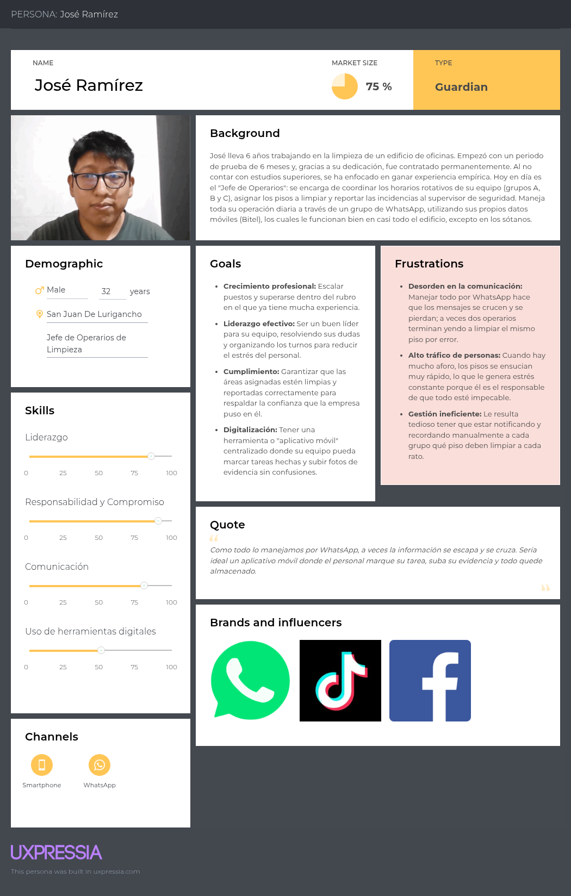
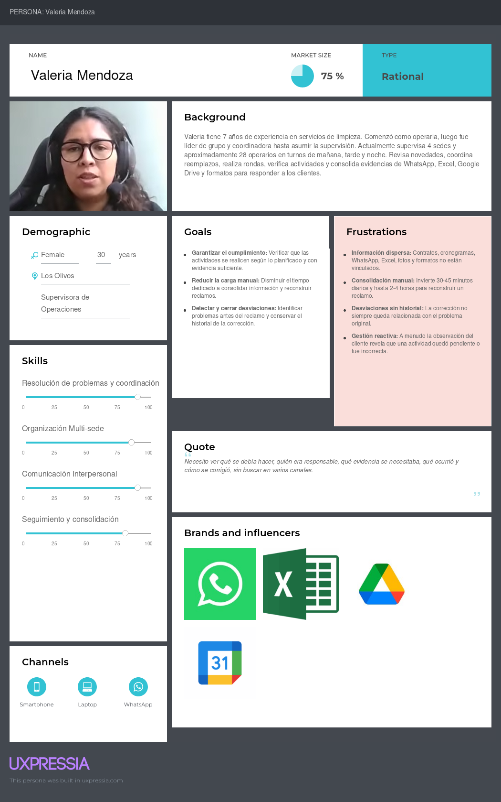
La matriz recoge tareas que existen independientemente de Service Compliance.
| Tarea actual | Operario — Frecuencia | Operario — Importancia | Supervisor — Frecuencia | Supervisor — Importancia |
|---|---|---|---|---|
| Consultar o recibir las áreas/actividades asignadas. | Alta | Alta | Media | Alta |
| Ejecutar actividades de limpieza. | Alta | Alta | Baja | Media |
| Comunicar o confirmar la finalización de una actividad. | Alta | Alta | Media | Alta |
| Presentar evidencia cuando el proceso o cliente la requiere. | Media/Alta | Alta | Media | Alta |
| Comunicar un impedimento, daño o excepción. | Media | Alta | Media | Alta |
| Adaptarse a cambios de zona, turno o prioridad. | Media | Alta | Alta | Alta |
| Verificar la calidad o finalización del trabajo. | Baja | Baja | Alta | Alta |
| Reasignar cobertura ante ausencias o cambios operativos. | Baja | Baja | Alta | Alta |
| Recopilar y organizar evidencias/registros. | Baja | Baja | Alta | Alta |
| Atender observaciones o reclamos del cliente. | Baja | Baja | Media/Alta | Alta |
| Dar seguimiento a desviaciones hasta su atención. | Baja | Media | Media/Alta | Alta |
| Consolidar el estado del servicio y elaborar reportes. | Baja | Baja | Media | Alta |
El operario concentra su actividad en ejecución y comunicación del resultado. El supervisor concentra la coordinación, verificación, reconstrucción del estado y atención de desviaciones. La coincidencia entre ambos está en la necesidad de compartir una referencia sobre qué debía hacerse y qué ocurrió.
Los Journey Maps representan el proceso As-Is, es decir, la situación actual antes de Service Compliance.
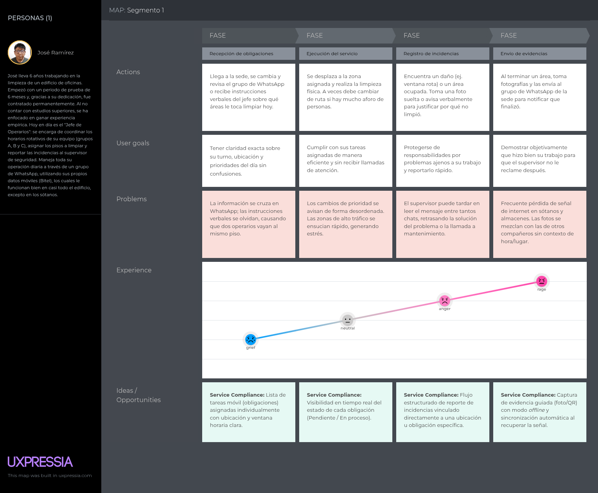
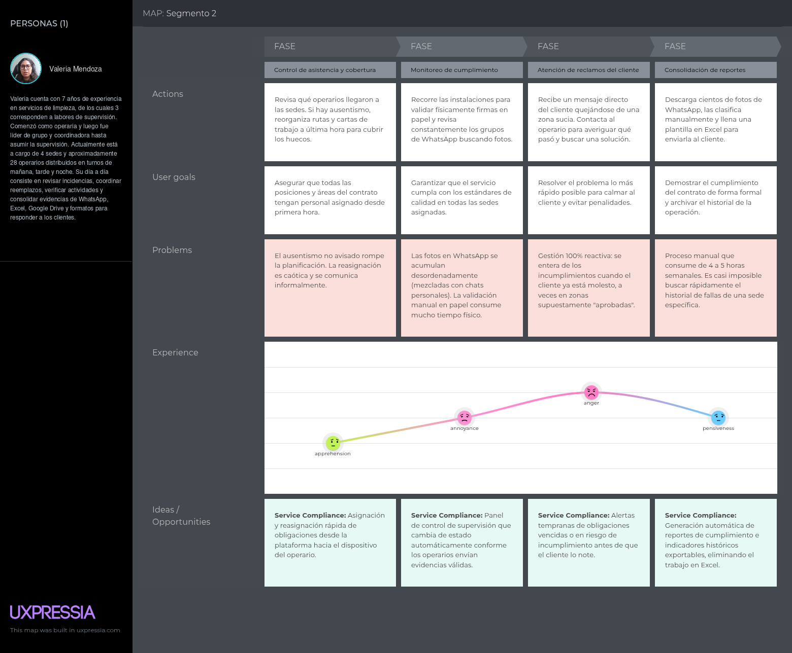
| Etapa | Qué hace | Información/canal actual | Pain point / riesgo |
|---|---|---|---|
| Inicio del turno | Recibe zona, rutina o cambio de prioridad. | Indicación verbal, WhatsApp, carta/cronograma. | Mensajes cruzados, prioridad ambigua o cambio tardío. |
| Ejecución | Realiza la actividad en el espacio asignado. | Conocimiento operativo e instrucciones. | El espacio puede estar ocupado o presentar un impedimento. |
| Confirmación | Comunica que terminó. | Aviso verbal, mensaje, foto o formato. | El resultado puede quedar sin referencia estructurada a la actividad. |
| Excepción | Reporta daño, imposibilidad o situación fuera de alcance. | Supervisor, WhatsApp o escalamiento local. | Puede perderse el contexto o interpretarse como incumplimiento. |
| Cierre | Continúa con otra actividad. | Confirmación informal. | No siempre conoce si el registro fue recibido, aceptado o requiere corrección. |
| Etapa | Qué hace | Información/canal actual | Pain point / riesgo |
|---|---|---|---|
| Planificación diaria | Revisa personal, novedades, zonas y prioridades. | WhatsApp, papel, Excel, experiencia propia. | Ausencias y cambios obligan a reorganizar. |
| Seguimiento | Consulta encargados, realiza rondas y recibe evidencia. | WhatsApp, llamadas, observación física. | Estado distribuido y difícil de consolidar. |
| Verificación | Decide si una actividad parece completada. | Foto, firma, inspección o comunicación. | Evidencia y criterio pueden no estar ligados a la obligación original. |
| Observación/reclamo | Reconstruye qué ocurrió. | Chats, archivos, Excel, llamadas. | Tiempo alto para localizar responsables y evidencia. |
| Corrección | Coordina solución y vuelve a verificar. | Mensajes, llamadas, ronda física. | El historial original y la corrección pueden quedar separados. |
| Reporte | Consolida información del periodo. | Excel, fotos, informes. | Trabajo manual y dificultad para comparar sedes/periodos. |
Los Empathy Maps deben construirse a partir de los User Personas y entrevistas, registrando qué ve, oye, dice, hace, piensa y siente cada arquetipo, junto con pains y gains.

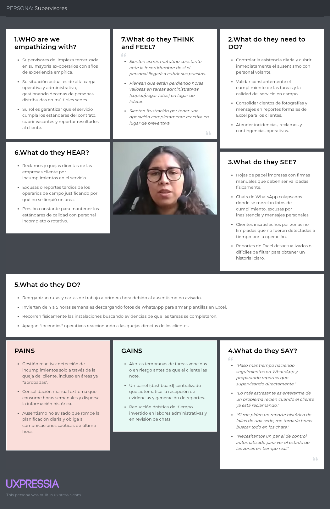
El Big Picture EventStorming representa el proceso de negocio actual sin introducir pantallas, APIs ni mecanismos técnicos como si fueran eventos de dominio. El artefacto se organiza en cuatro momentos de trabajo.
| Orden | Domain Event candidato | Hotspot / pregunta |
|---|---|---|
| 1 | Service Contract was agreed | ¿El contrato es la única fuente del trabajo operativo? |
| 2 | Service Conditions were identified | ¿Quién interpreta qué condiciones son operables? |
| 3 | Service Plan was defined | ¿Existe plan, cronograma, carta de trabajo u otro artefacto intermedio? |
| 4 | Service Obligation was scheduled | ¿Cómo se determina frecuencia, ventana y sitio? |
| 5 | Service Obligation was assigned | ¿Quién asigna y cuándo cambia el responsable? |
| 6 | Service Obligation became due | ¿Qué significa “a tiempo” en cada servicio? |
| 7 | Execution was started | ¿Es necesario registrar inicio en todos los casos? |
| 8 | Execution result was recorded | ¿Qué resultados posibles existen además de “completado”? |
| 9 | Evidence was provided | ¿Qué evidencia es suficiente para cada obligación? |
| 10 | Exception was reported | ¿Qué diferencia una excepción aceptable de una desviación? |
| 11 | Execution was submitted for review | ¿Siempre existe revisión humana? |
| 12 | Compliance was evaluated | ¿Qué reglas y actor participan en la evaluación? |
| 13 | Compliance Result was determined | ¿Cumplido, excepción aceptada, desviación o incumplimiento? |
| 14 | Client Observation was received | ¿Puede reabrir o cuestionar una evaluación previa? |
| 15 | Non-compliance was confirmed | ¿Toda desviación se convierte en incumplimiento? |
| 16 | Corrective Action was assigned | ¿Quién decide que hace falta una acción correctiva? |
| 17 | Corrective Action was completed | ¿Cómo se verifica que la acción fue suficiente? |
| 18 | Compliance Case was closed | ¿Qué debe conservarse del estado original? |
| 19 | Compliance Report was generated | ¿Por sede, servicio, cliente o periodo? |
El ordenamiento en timeline se propone por fases del negocio (Contrato, Planificación, Ejecución, Revisión, Evaluación de cumplimiento, Corrección y cierre, Reporte). La numeración E1–E19 corresponde a los candidatos de la tabla anterior; los hot spots se contrastan durante la exploración.
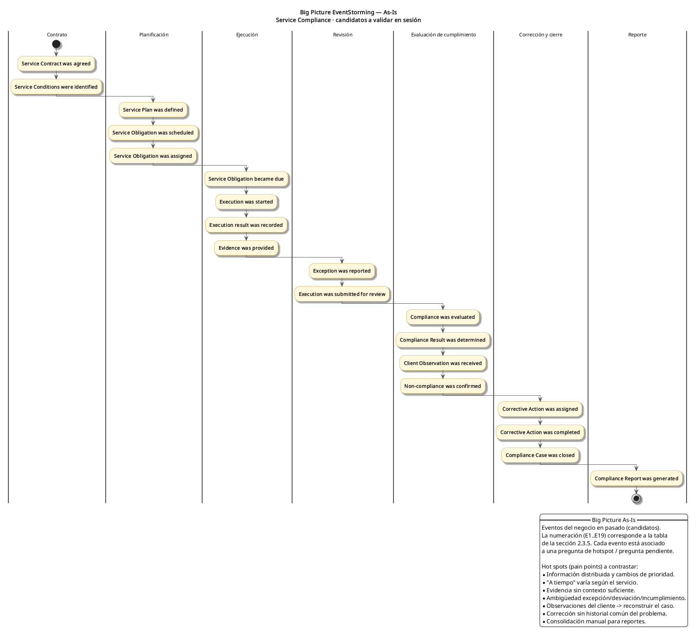
El glosario utiliza términos del negocio en inglés y evita términos de ingeniería de software.
| Término | Definición de trabajo |
|---|---|
| Service Contract | Acuerdo entre la empresa prestadora y la organización cliente que establece el marco del servicio. |
| Service Condition | Condición relevante del acuerdo que debe ser considerada al planificar u operar el servicio. |
| Service Plan | Interpretación operativa aprobada del servicio, donde se organizan sitios, condiciones, obligaciones, frecuencia, ventanas y requisitos. |
| Service Site | Instalación o ubicación donde se presta el servicio. |
| Obligation Definition | Regla del Service Plan que describe qué actividad debe cumplirse, dónde, con qué frecuencia/ventana y bajo qué criterio. |
| Service Obligation | Instancia operativa que debe ser atendida en un periodo o ventana específica. |
| Assignment | Relación entre una Service Obligation y el operario responsable de atenderla. |
| Execution | Registro de lo que efectivamente se realizó o intentó realizar para una Service Obligation. |
| Evidence Requirement | Condición que establece qué respaldo debe acompañar una ejecución cuando sea necesario. |
| Evidence | Información presentada para respaldar una afirmación sobre la ejecución; su validez depende del Evidence Requirement y del contexto. |
| Exception | Circunstancia que impide o modifica la ejecución esperada y que puede ser aceptada según las reglas aplicables. |
| Deviation | Diferencia detectada entre el resultado esperado y el observado. No implica automáticamente Non-compliance. |
| Compliance Evaluation | Proceso de comparar la Service Obligation y sus criterios con la Execution, Evidence y Exception disponibles. |
| Compliance Result | Resultado de la evaluación: puede indicar cumplimiento, excepción aceptada, desviación o incumplimiento. |
| Non-compliance | Compliance Result que confirma que una obligación no cumplió un criterio aplicable y que no existe una excepción aceptada que lo justifique. |
| Client Observation | Cuestionamiento o comentario de la organización cliente acerca del resultado de un servicio. |
| Corrective Action | Acción acordada para responder a un Non-compliance o situación que requiere corrección. No elimina el resultado original. |
| Compliance Case | Conjunto trazable que conserva evaluación, resultado, observaciones y acciones posteriores relacionadas con una ejecución. |
| Compliance Report | Consolidación del estado de cumplimiento para un servicio, sitio y periodo definidos. |
Los requisitos reflejan las necesidades identificadas en Needfinding y el alcance de Service Compliance. El producto contempla una aplicación Android nativa para el operario, una aplicación cross-platform para supervisores, una REST API propia, almacenamiento local para continuidad en campo y servicios externos cuando aportan una capacidad específica.
| Etapa | Comportamiento esperado | Resultado buscado |
|---|---|---|
| Recibir trabajo | Consulta sus Service Obligations asignadas con sitio, ventana e instrucciones necesarias. | Menor ambigüedad sobre qué debe ejecutar. |
| Ejecutar | Inicia/atiende la obligación sin interpretar cláusulas contractuales. | Mantener foco en trabajo físico. |
| Registrar resultado | Registra completed, partial, blocked u otro resultado permitido. | Explicar qué ocurrió, no solo marcar una tarea. |
| Adjuntar evidencia | Presenta únicamente la Evidence requerida para esa obligación. | Evitar evidencia innecesaria y conservar contexto. |
| Reportar excepción | Registra impedimento/exception con motivo. | Evitar que una ejecución imposible quede como incumplimiento sin explicación. |
| Trabajar con conectividad limitada | Guarda temporalmente el registro y sincroniza posteriormente. | Reducir pérdida de información sin detener el trabajo. |
| Recibir corrección | Consulta una Corrective Action cuando le corresponde y registra su atención. | Cerrar el ciclo sin borrar el Non-compliance original. |
| Etapa | Comportamiento esperado | Resultado buscado |
|---|---|---|
| Preparar servicio | Define/activa un Service Plan y sus Obligation Definitions a partir de condiciones operativas aprobadas. | Separar contrato de interpretación operativa. |
| Coordinar | Asigna obligaciones y consulta estado por sitio/periodo. | Visibilidad compartida de la operación. |
| Revisar | Consulta Execution, Evidence y Exceptions. | Evitar reconstrucción desde múltiples canales. |
| Evaluar | Registra o confirma Compliance Result conforme a reglas aplicables. | Distinguir cumplimiento, excepción, desviación e incumplimiento. |
| Corregir | Asigna y sigue Corrective Action cuando corresponde. | Mantener historial del problema y de su respuesta. |
| Responder observaciones | Consulta el Compliance Case completo. | Explicar qué ocurrió con trazabilidad. |
| Reportar | Genera Compliance Report e indicadores por periodo/sitio. | Reducir consolidación manual. |
| Epic ID | Epic | Propósito |
|---|---|---|
| EP01 | Service Planning | Definir Service Plan, sitios, Obligation Definitions y Evidence Requirements. |
| EP02 | Field Operations | Asignar y ejecutar Service Obligations en campo con evidencia/excepciones. |
| EP03 | Compliance Management | Evaluar cumplimiento, registrar Compliance Result y gestionar correctivas/observaciones. |
| EP04 | Reporting & Follow-up | Consultar estado, alertas, indicadores e informes trazables. |
| EP05 | Identity & Access | Autenticar usuarios y aplicar roles/permisos. |
| EP06 | Landing Page | Comunicar propuesta de valor y captar contacto para pilotos/demos. |
| EP07 | Technical Foundation | REST API, almacenamiento local, servicios externos y capacidades técnicas. |
| Campo | Contenido |
|---|---|
| Story ID | US-01 |
| User | Supervisor/coordinador autorizado |
| Priority | High |
| Epic | EP01 — Service Planning |
| Title | Crear un Service Plan |
| Description | Como supervisor/coordinador autorizado, deseo registrar un Service Plan para un servicio y sitio, para disponer de una referencia operativa común sin interpretar el contrato durante cada ejecución. |
| Acceptance Criteria | Scenario 1: Given que el supervisor cuenta con datos mínimos del servicio y sitio, When registra el Service Plan, Then el sistema conserva un identificador, periodo de vigencia, sitio y estado Draft. Scenario 2: Given un Service Plan Draft, When faltan datos obligatorios, Then el sistema no permite activarlo e informa qué información falta. |
| Campo | Contenido |
|---|---|
| Story ID | US-02 |
| User | Supervisor/coordinador autorizado |
| Priority | High |
| Epic | EP01 |
| Title | Definir una obligación operativa |
| Description | Como supervisor/coordinador, deseo definir qué actividad debe realizarse, dónde, con qué frecuencia/ventana y qué evidencia requiere, para que cada ejecución tenga criterios claros. |
| Acceptance Criteria | Scenario 1: Given un Service Plan Draft, When se añade una Obligation Definition válida, Then queda asociada al plan con sitio, descripción, schedule rule y criterio de aceptación. Scenario 2: Given una obligación que requiere evidencia, When se configura su Evidence Requirement, Then el requisito queda explícitamente asociado y no se aplica automáticamente a otras obligaciones. |
| Campo | Contenido |
|---|---|
| Story ID | US-03 |
| User | Supervisor/coordinador autorizado |
| Priority | High |
| Epic | EP01 |
| Title | Activar el Service Plan |
| Description | Como supervisor/coordinador, deseo activar un Service Plan revisado para que sus obligaciones puedan ser programadas para la operación. |
| Acceptance Criteria | Scenario 1: Given un plan con al menos una Obligation Definition válida, When el supervisor lo activa, Then el estado cambia a Active y queda registrada la fecha de activación. Scenario 2: Given un plan Active, When se intenta modificar una regla que afectaría obligaciones ya emitidas, Then el sistema exige una nueva versión o cambio con trazabilidad. |
| Campo | Contenido |
|---|---|
| Story ID | US-04 |
| User | Operario |
| Priority | High |
| Epic | EP02 — Field Operations |
| Title | Consultar Service Obligations asignadas |
| Description | Como operario, deseo consultar las obligaciones que me corresponden, para conocer qué debo realizar, dónde y dentro de qué ventana. |
| Acceptance Criteria | Scenario 1: Given que existen obligaciones asignadas al operario, When consulta su trabajo, Then recibe únicamente obligaciones dentro de su alcance con sitio, actividad, ventana e instrucciones necesarias. Scenario 2: Given que una obligación cambia antes de iniciarse, When el operario vuelve a consultar o sincroniza, Then visualiza la versión vigente. |
| Campo | Contenido |
|---|---|
| Story ID | US-05 |
| User | Operario |
| Priority | High |
| Epic | EP02 |
| Title | Registrar el resultado de una ejecución |
| Description | Como operario, deseo registrar qué ocurrió al atender una Service Obligation, para que supervisión conozca el resultado real de la actividad. |
| Acceptance Criteria | Scenario 1: Given una obligación asignada, When el operario inicia y registra su resultado, Then la Execution queda vinculada a la obligación, operario y timestamps correspondientes. Scenario 2: Given una obligación no asignada al operario, When intenta registrar una ejecución, Then el sistema rechaza la operación. |
| Campo | Contenido |
|---|---|
| Story ID | US-06 |
| User | Operario |
| Priority | High |
| Epic | EP02 |
| Title | Adjuntar evidencia cuando corresponde |
| Description | Como operario, deseo presentar la evidencia solicitada por la obligación para respaldar el resultado sin capturar información innecesaria. |
| Acceptance Criteria | Scenario 1: Given una obligación con Evidence Requirement, When el operario registra la evidencia del tipo permitido, Then queda vinculada a la Execution. Scenario 2: Given una obligación que no exige una evidencia específica, When el operario registra el resultado, Then el sistema no bloquea el envío por ausencia de foto/QR/GPS no requeridos. |
| Campo | Contenido |
|---|---|
| Story ID | US-07 |
| User | Operario |
| Priority | High |
| Epic | EP02 |
| Title | Reportar un impedimento o excepción |
| Description | Como operario, deseo registrar una Exception cuando una obligación no puede ejecutarse como estaba prevista, para que el resultado sea revisado con contexto. |
| Acceptance Criteria | Scenario 1: Given una obligación asignada, When el operario reporta una excepción con motivo, Then la excepción queda asociada a la Execution y disponible para revisión. Scenario 2: Given una Exception registrada, When se evalúa el cumplimiento, Then no se convierte automáticamente en Non-compliance sin aplicar las reglas correspondientes. |
| Campo | Contenido |
|---|---|
| Story ID | US-08 |
| User | Operario |
| Priority | High |
| Epic | EP02 |
| Title | Continuar el registro sin conexión inmediata |
| Description | Como operario, deseo guardar temporalmente mis registros cuando no tengo conectividad para no perder el trabajo realizado y sincronizarlo después. |
| Acceptance Criteria | Scenario 1: Given que el dispositivo no tiene conexión, When el operario guarda una Execution o Evidence, Then el registro queda almacenado localmente con estado pendiente de sincronización. Scenario 2: Given registros pendientes y conectividad recuperada, When se ejecuta la sincronización, Then los registros se envían de forma idempotente y el usuario conoce si quedaron sincronizados o requieren atención. |
| Campo | Contenido |
|---|---|
| Story ID | US-09 |
| User | Supervisor/coordinador |
| Priority | High |
| Epic | EP04 — Reporting & Follow-up |
| Title | Consultar el estado de las obligaciones |
| Description | Como supervisor, deseo consultar obligaciones por sitio, periodo y estado para identificar qué requiere mi atención sin revisar múltiples canales. |
| Acceptance Criteria | Scenario 1: Given obligaciones del alcance del supervisor, When consulta el estado operativo, Then puede distinguir assigned, in progress, submitted, excepted y overdue según las reglas vigentes. Scenario 2: Given una obligación fuera de su alcance, When intenta consultarla, Then el sistema no expone información no autorizada. |
| Campo | Contenido |
|---|---|
| Story ID | US-10 |
| User | Supervisor/coordinador |
| Priority | High |
| Epic | EP03 — Compliance Management |
| Title | Revisar la ejecución de una obligación |
| Description | Como supervisor, deseo revisar Execution, Evidence y Exceptions juntas para comprender qué ocurrió antes de evaluar el cumplimiento. |
| Acceptance Criteria | Scenario 1: Given una Execution submitted, When el supervisor abre el caso, Then visualiza obligación, resultado, evidencias, excepciones y timestamps relacionados. Scenario 2: Given que falta información exigida por el Service Plan, When revisa el caso, Then la ausencia queda indicada sin inventar automáticamente un Compliance Result. |
| Campo | Contenido |
|---|---|
| Story ID | US-11 |
| User | Supervisor/coordinador |
| Priority | High |
| Epic | EP03 |
| Title | Evaluar el cumplimiento |
| Description | Como supervisor, deseo registrar el Compliance Result aplicando los criterios del Service Plan para distinguir cumplimiento, excepción aceptada, desviación e incumplimiento. |
| Acceptance Criteria | Scenario 1: Given una Execution revisable, When se aplican criterios y evidencia disponibles, Then el caso registra un Compliance Result válido con actor y timestamp. Scenario 2: Given una Exception aceptada por la regla aplicable, When se evalúa el caso, Then el resultado puede ser Exception Accepted sin convertirla en Non-compliance. |
| Campo | Contenido |
|---|---|
| Story ID | US-12 |
| User | Supervisor/coordinador |
| Priority | High |
| Epic | EP03 |
| Title | Asignar y dar seguimiento a una acción correctiva |
| Description | Como supervisor, deseo asignar una Corrective Action cuando corresponde para dar seguimiento a la respuesta sin borrar el Non-compliance original. |
| Acceptance Criteria | Scenario 1: Given un Compliance Case que requiere corrección, When el supervisor asigna una Corrective Action, Then queda registrada con responsable, descripción, fecha objetivo y estado. Scenario 2: Given una acción completada, When el supervisor verifica el cierre, Then el historial conserva tanto el Compliance Result original como la acción realizada. |
| Campo | Contenido |
|---|---|
| Story ID | US-13 |
| User | Supervisor/coordinador |
| Priority | Medium |
| Epic | EP03 |
| Title | Registrar una observación del cliente |
| Description | Como supervisor, deseo registrar una Client Observation asociada a un caso para conservar el contexto de un cuestionamiento posterior a la ejecución. |
| Acceptance Criteria | Scenario 1: Given una observación relacionada con una obligación, When se registra, Then queda vinculada al Compliance Case con fecha, descripción y origen. Scenario 2: Given un resultado previamente registrado, When llega una observación, Then el sistema conserva el resultado original y registra cualquier reevaluación como una nueva decisión trazable. |
| Campo | Contenido |
|---|---|
| Story ID | US-14 |
| User | Supervisor/coordinador |
| Priority | High |
| Epic | EP03 |
| Title | Consultar el historial completo de un caso |
| Description | Como supervisor, deseo consultar la secuencia de ejecución, evaluación, observaciones y correctivas para explicar qué ocurrió sin reconstruir datos dispersos. |
| Acceptance Criteria | Scenario 1: Given un Compliance Case con cambios, When se consulta su historial, Then se muestran los eventos relevantes en orden temporal. Scenario 2: Given una Corrective Action cerrada, When se consulta el historial, Then el Non-compliance original sigue visible y no aparece reescrito como si nunca hubiera ocurrido. |
| Campo | Contenido |
|---|---|
| Story ID | US-15 |
| User | Supervisor/coordinador |
| Priority | Medium |
| Epic | EP04 |
| Title | Generar un reporte de cumplimiento |
| Description | Como supervisor, deseo generar un Compliance Report por servicio, sitio y periodo para comunicar el estado sin consolidar manualmente múltiples fuentes. |
| Acceptance Criteria | Scenario 1: Given un periodo con información disponible, When el supervisor solicita el reporte, Then se consolidan obligaciones, resultados, excepciones, incumplimientos y correctivas del alcance seleccionado. Scenario 2: Given que existen casos sin evaluación, When se genera el reporte, Then se muestran como pendientes y no se asumen cumplidos. |
| Campo | Contenido |
|---|---|
| Story ID | US-16 |
| User | Supervisor/coordinador |
| Priority | Medium |
| Epic | EP04 |
| Title | Recibir alertas de obligaciones o casos que requieren atención |
| Description | Como supervisor, deseo recibir alertas configuradas para situaciones relevantes para actuar antes de que el problema dependa exclusivamente de un reclamo del cliente. |
| Acceptance Criteria | Scenario 1: Given una obligación próxima o vencida según una regla configurada, When se cumple la condición de alerta, Then el supervisor recibe una notificación una sola vez por el evento relevante. Scenario 2: Given una situación que no requiere alerta, When cambia de estado, Then el sistema no genera notificaciones innecesarias. |
| Campo | Contenido |
|---|---|
| Story ID | US-17 |
| User | Operario / Supervisor |
| Priority | Medium |
| Epic | EP05 — Identity & Access |
| Title | Acceder con un rol autorizado |
| Description | Como usuario de la empresa prestadora, deseo autenticarme para acceder únicamente a las capacidades y datos permitidos para mi rol. |
| Acceptance Criteria | Scenario 1: Given credenciales válidas y cuenta activa, When el usuario se autentica, Then obtiene una sesión con su rol y empresa. Scenario 2: Given un operario autenticado, When intenta ejecutar una operación exclusiva de supervisor, Then la solicitud es rechazada. |
| Campo | Contenido |
|---|---|
| Story ID | US-18 |
| User | Visitante / potencial comprador |
| Priority | Medium |
| Epic | EP06 — Landing Page |
| Title | Comprender qué problema resuelve Service Compliance |
| Description | Como responsable de una empresa prestadora, deseo comprender la propuesta de valor de Service Compliance para decidir si vale la pena solicitar una demostración. |
| Acceptance Criteria | Scenario 1: Given un visitante en la Landing Page, When revisa la propuesta principal, Then puede identificar público objetivo, problema, beneficios y alcance inicial. Scenario 2: Given la página publicada, When se accede desde móvil o escritorio, Then el contenido principal permanece legible y navegable. |
| Campo | Contenido |
|---|---|
| Story ID | US-19 |
| User | Visitante / potencial comprador |
| Priority | Medium |
| Epic | EP06 |
| Title | Solicitar una demostración o piloto |
| Description | Como potencial comprador, deseo disponer de un canal de contacto para manifestar interés en una demostración o piloto. |
| Acceptance Criteria | Scenario 1: Given un visitante interesado, When utiliza el mecanismo de contacto, Then puede enviar sus datos mínimos y motivo de interés. Scenario 2: Given datos obligatorios incompletos, When intenta enviarlos, Then el sistema informa qué información falta. |
| Campo | Contenido |
|---|---|
| Story ID | TS-01 |
| User | Developer |
| Priority | High |
| Epic | EP07 — Technical Foundation |
| Title | Exponer capacidades mediante RESTful API documentada |
| Description | Como Developer, deseo exponer las capacidades del dominio mediante una RESTful API propia para que ambas aplicaciones móviles consuman el mismo modelo de negocio. |
| Acceptance Criteria | Scenario 1: Given una operación válida, When un cliente autorizado envía un request al endpoint correspondiente, Then la API responde con código HTTP y contrato JSON documentados en OpenAPI. Scenario 2: Given un request inválido, When la validación falla, Then la API retorna Problem Details sin filtrar información sensible. |
| Campo | Contenido |
|---|---|
| Story ID | TS-02 |
| User | Developer |
| Priority | High |
| Epic | EP07 |
| Title | Implementar cola local e idempotencia de sincronización |
| Description | Como Developer, deseo persistir localmente ejecuciones pendientes y sincronizarlas de forma idempotente para soportar conectividad intermitente en la app nativa del operario. |
| Acceptance Criteria | Scenario 1: Given un registro creado offline, When la aplicación se reinicia, Then el registro pendiente continúa disponible localmente. Scenario 2: Given que el mismo registro se envía más de una vez por reintento, When la API lo procesa, Then no se crean duplicados. |
| Campo | Contenido |
|---|---|
| Story ID | TS-03 |
| User | Developer |
| Priority | Medium |
| Epic | EP07 |
| Title | Integrar notificaciones push con Firebase Cloud Messaging |
| Description | Como Developer, deseo integrar un servicio externo de notificaciones para enviar alertas relevantes a supervisores sin implementar infraestructura push propia. |
| Acceptance Criteria | Scenario 1: Given un evento configurado para notificación, When el backend lo procesa, Then se solicita a FCM el envío al usuario objetivo. Scenario 2: Given un token inválido o expirado, When FCM rechaza el envío, Then el error se registra y no se repite indefinidamente. |
| Campo | Contenido |
|---|---|
| Story ID | TS-04 |
| User | Developer |
| Priority | Medium |
| Epic | EP07 |
| Title | Almacenar evidencia multimedia fuera de la base relacional |
| Description | Como Developer, deseo almacenar archivos de evidencia en un servicio de objetos para conservar en PostgreSQL solo metadatos y referencias controladas. |
| Acceptance Criteria | Scenario 1: Given una fotografía válida, When se confirma su registro, Then el archivo se almacena en el servicio configurado y la Evidence conserva una referencia. Scenario 2: Given un archivo no permitido o demasiado grande, When se intenta almacenar, Then la operación se rechaza antes de crear una Evidence válida. |
| Campo | Contenido |
|---|---|
| Story ID | SP-01 |
| User | Development Team |
| Priority | High |
| Epic | EP07 |
| Title | Investigar y prototipar una tecnología no utilizada en clase para sincronización offline/conflict handling |
| Description | Como equipo de desarrollo, deseamos investigar, comparar y prototipar una tecnología, biblioteca o servicio no utilizado en clase que permita robustecer la sincronización offline o resolución de conflictos, para cumplir el feature de aprendizaje autónomo y reducir riesgo técnico antes de implementar US-08. |
| Acceptance Criteria | Scenario 1: Given al menos dos alternativas candidatas, When el equipo las evalúa, Then documenta compatibilidad, limitaciones, curva de aprendizaje, costo y relación con el problema. Scenario 2: Given una alternativa seleccionada que no fue utilizada en clase, When se completa un proof of concept, Then existe evidencia ejecutable y conclusiones sobre su viabilidad. Scenario 3: Given los resultados del spike, When se cierra la investigación, Then la decisión y el aprendizaje se documentan para el Student Outcome y arquitectura. |
Se establecen tres Business Goals para relacionar resultados de negocio, comportamientos de los User Personas y entregables del producto.
| Goal | Actor / Persona | Impact buscado | Deliverables | User Stories |
|---|---|---|---|---|
| BG-01 | Supervisor | Consulta una fuente común en lugar de reconstruir chats, hojas y papeles. | Estado operativo, Compliance Case, historial y filtros. | US-09, US-10, US-14 |
| BG-01 | Operario | Registra el resultado directamente sobre su obligación. | Obligaciones asignadas, Execution, Evidence/Exception. | US-04, US-05, US-06, US-07 |
| BG-02 | Operario | Completa el registro requerido con mínima fricción incluso con conectividad limitada. | Evidence Requirement configurable, almacenamiento local y sync. | US-06, US-08, TS-02 |
| BG-02 | Supervisor | Define qué evidencia corresponde a cada obligación en vez de exigirla de forma uniforme. | Service Plan y Obligation Definition. | US-01, US-02, US-03 |
| BG-03 | Supervisor | Distingue Compliance Result y conserva la respuesta posterior. | Compliance Evaluation, Corrective Action, historial. | US-11, US-12, US-13, US-14 |
| BG-01 / BG-03 | Supervisor | Comunica el estado mediante reportes consistentes. | Reporting & Insights. | US-15, US-16 |
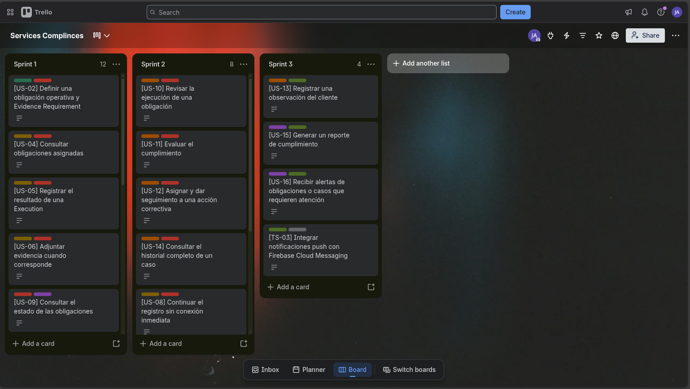
Enlace del Trello: https://trello.com/invite/b/6aac04da3175e8ef74c2b934/ATTI9a99c2adb3c18edd32f308698b0a396930149107/services-complinces
El backlog prioriza el flujo central del producto y mantiene Authentication como capacidad habilitadora sin convertirla en la primera historia de valor. Las historias del Landing Page se incluyen desde Sprint 1.
| Orden | Story ID | Título | Story Points | Sprint propuesto |
|---|---|---|---|---|
| 1 | US-02 | Definir una obligación operativa y Evidence Requirement | 5 | 1 |
| 2 | US-04 | Consultar obligaciones asignadas | 3 | 1 |
| 3 | US-05 | Registrar el resultado de una Execution | 5 | 1 |
| 4 | US-06 | Adjuntar Evidence requerida | 3 | 1 |
| 5 | US-09 | Consultar estado operativo | 5 | 1 |
| 6 | US-18 | Landing Page: comprender propuesta | 3 | 1 |
| 7 | US-19 | Landing Page: solicitar contacto | 2 | 1 |
| 8 | SP-01 | Investigar tecnología de aprendizaje autónomo | 5 | 1 |
| 9 | TS-01 | RESTful API propia documentada | 5 | 1 |
| 10 | US-01 | Crear Service Plan | 5 | 1 |
| 11 | US-03 | Activar Service Plan | 3 | 1 |
| 12 | US-07 | Reportar Exception | 3 | 1 |
| 13 | US-10 | Revisar Execution y Evidence | 5 | 2 |
| 14 | US-11 | Registrar Compliance Result | 8 | 2 |
| 15 | US-12 | Gestionar Corrective Action | 5 | 2 |
| 16 | US-14 | Consultar historial de Compliance Case | 5 | 2 |
| 17 | US-08 | Guardar y sincronizar con conectividad limitada | 8 | 2 |
| 18 | TS-02 | Persistencia local e idempotencia de sync | 8 | 2 |
| 19 | US-17 | Autenticarse y acceder según rol | 5 | 2 |
| 20 | US-13 | Registrar Client Observation | 3 | 3 |
| 21 | US-15 | Generar Compliance Report | 8 | 3 |
| 22 | US-16 | Recibir alertas relevantes | 5 | 3 |
| 23 | TS-03 | Integrar FCM | 3 | 3 |
| 24 | TS-04 | Almacenar evidencia multimedia | 5 | 2 |
El EventStorming estratégico representa el proceso objetivo del producto y utiliza eventos de negocio, no pantallas ni componentes técnicos.
La herramienta utilizada para la sesión fue Miro, que facilitó la colaboración en tiempo real y la organización visual de los eventos. La sesión se dividió en las siguientes etapas:
Se identificaron eventos relacionados con el ciclo de vida completo de una obligación de servicio, desde el registro del contrato hasta la generación del reporte de cumplimiento, incluyendo actividades complementarias como la captura de evidencia en campo, la detección de incumplimientos y la gestión de incidencias.
Step 1: Unstructured Exploration
Lluvia de ideas con eventos importantes dentro del dominio de Service Compliance, organizados por área funcional para facilitar su posterior análisis: Cuenta/Sesión, Contrato/Obligación, Ejecución/Evidencia, Cumplimiento/SLA, Incidencia/Acción Correctiva, y Reportes/Notificaciones.
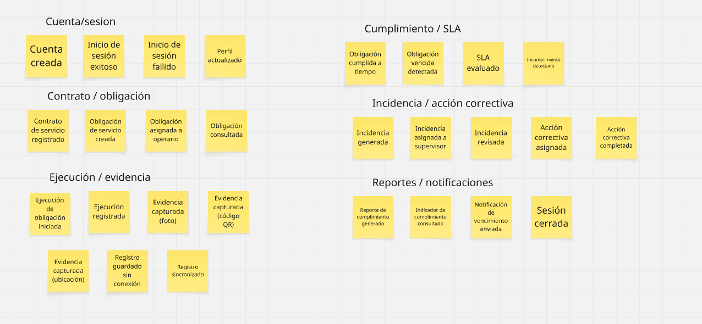
Step 2: Timelines
Organización de los eventos identificados en el Step 1 en flujos funcionales secuenciales, incluyendo escenarios alternativos como el registro de evidencia sin conexión y la bifurcación entre obligaciones cumplidas a tiempo y obligaciones vencidas que derivan en incidencias.
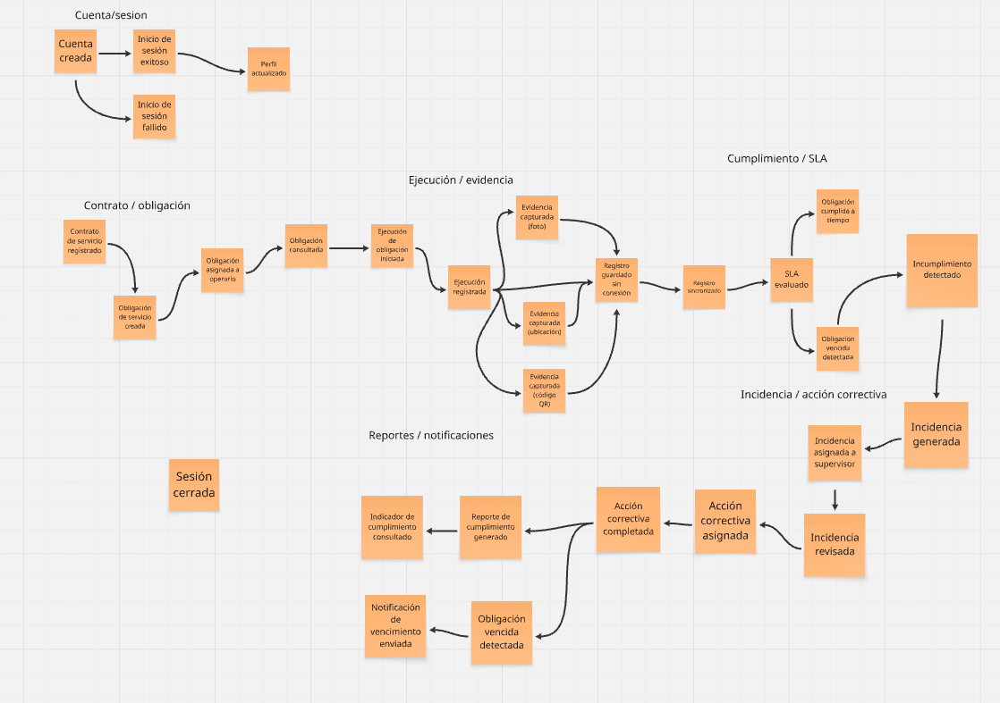
Step 3: Pain Points
Identificación de puntos conflictivos o dolorosos en la experiencia de los usuarios (operarios y supervisores), incluyendo problemas de conectividad al capturar evidencia, ambigüedad en la interpretación del plazo del SLA, y riesgos de duplicidad de registros al sincronizar ejecuciones offline.
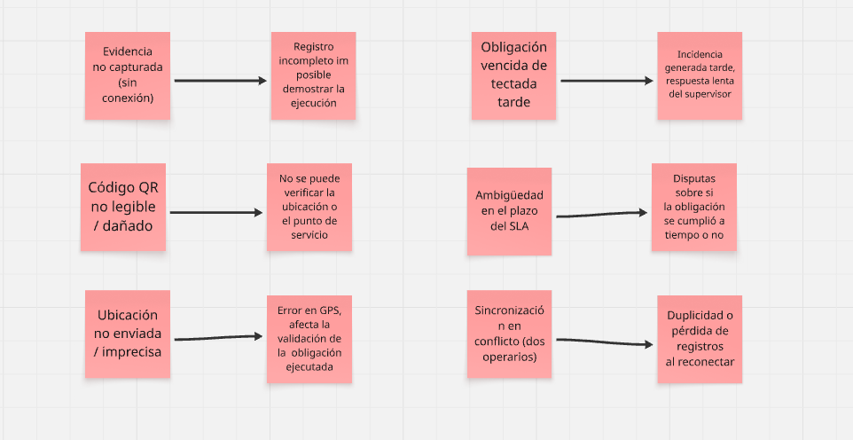
Sobre el timeline del EventStorming general se realizó una segunda sesión para delimitar los Candidate Bounded Contexts de la solución, aplicando las técnicas de start-with-value y look-for-pivotal-events sobre los eventos identificados. El detalle de los contextos definidos y sus flujos de interacción se presenta en el siguiente apartado.
Como resultado de la delimitación se definieron cinco Candidate Bounded Contexts, los cuales reciben el flujo de mensajes de dominio requerido para operar:
Authentication:
Gestiona la información y operaciones relacionadas con el registro, inicio de sesión y perfil de los usuarios del sistema (operarios y supervisores).
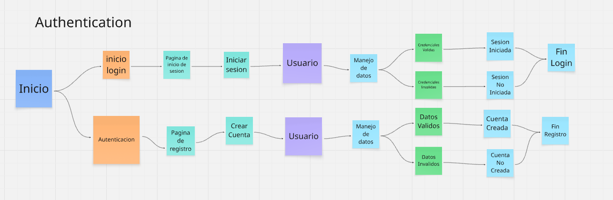
Contract & Obligation Management:
Gestiona la información y operaciones relacionadas con los contratos de servicio y las obligaciones operativas derivadas de ellos, incluyendo su registro y asignación a los operarios de campo.
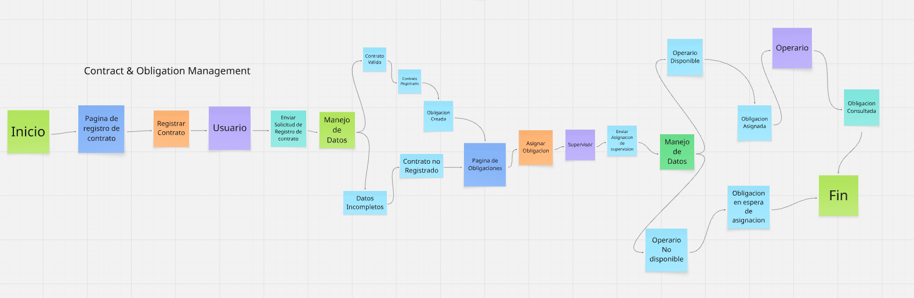
Field Execution & Evidence:
Gestiona la ejecución de obligaciones en campo y la captura de evidencia asociada (foto, código QR, ubicación), incluyendo el soporte de registro sin conexión y su posterior sincronización. Constituye el core domain de la solución.
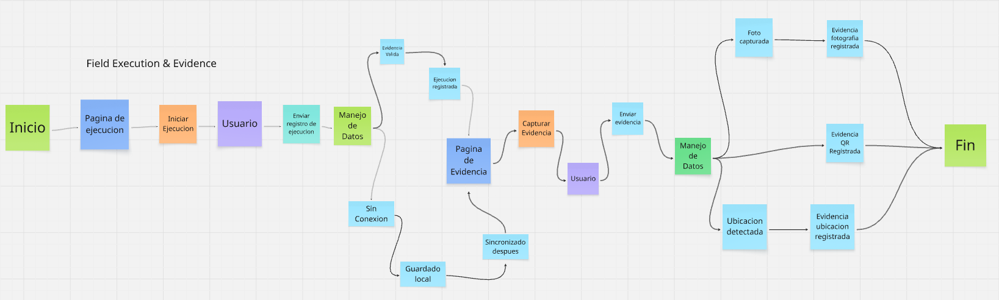
Incident & Corrective Action:
Gestiona la evaluación del cumplimiento de SLA, la detección de incumplimientos, y el ciclo de vida de las incidencias generadas junto con sus acciones correctivas asignadas por el supervisor.
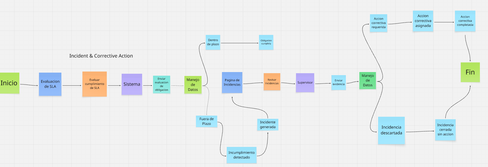
Compliance Reporting:
Gestiona la consolidación de información proveniente de los demás contextos para la generación de reportes de cumplimiento e indicadores, así como el envío de notificaciones automáticas de vencimientos y cambios de estado.
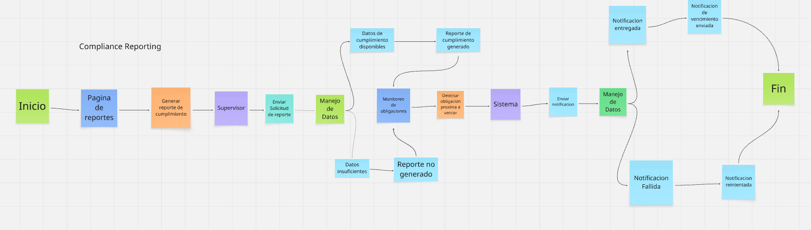
Con el fin de visualizar cómo colaboran los Bounded Contexts identificados para resolver los casos de uso principales del negocio, se aplicó la técnica de Domain Storytelling. A continuación, se presentan los flujos de interacción:
Authentication:
Representa el flujo de registro e inicio de sesión del usuario en el sistema.
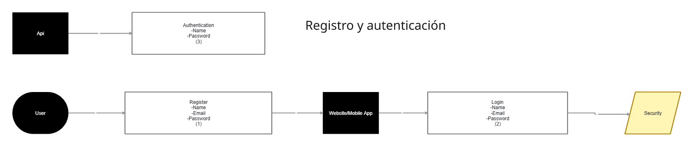
Field Execution & Evidence:
Representa el flujo mediante el cual un operario consulta su obligación asignada, ejecuta el servicio y registra la evidencia correspondiente, incluyendo el escenario de registro sin conexión.
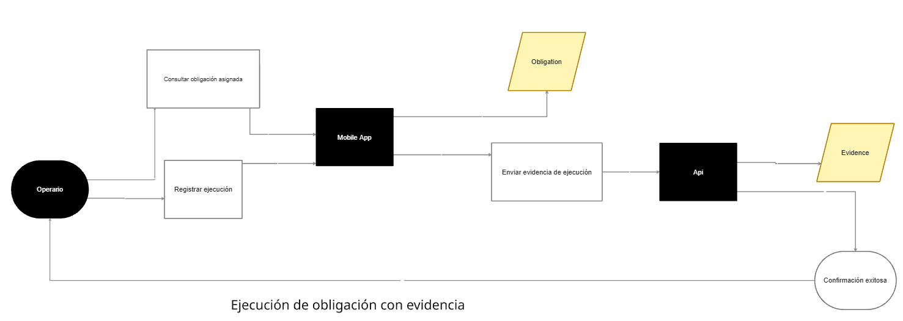
Incident & Corrective Action:
Representa el flujo mediante el cual el sistema evalúa automáticamente el cumplimiento del SLA, genera una incidencia ante un incumplimiento, y el supervisor revisa y asigna una acción correctiva.
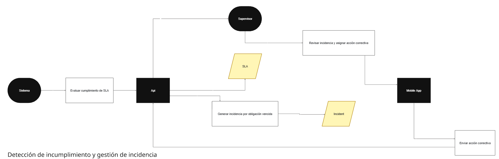
Compliance Reporting:
Representa el flujo mediante el cual el supervisor solicita un reporte de cumplimiento, el cual es generado consolidando información proveniente de los contextos de Field Execution & Evidence e Incident & Corrective Action.
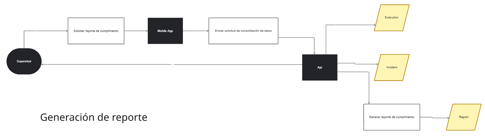
Flujo General:
Representa la interacción y el flujo de información entre los diferentes Bounded Contexts del sistema, evidenciando cómo Authentication habilita el acceso, Contract & Obligation Management origina las obligaciones, Field Execution & Evidence registra la ejecución, Incident & Corrective Action gestiona las desviaciones y Compliance Reporting consolida la información.
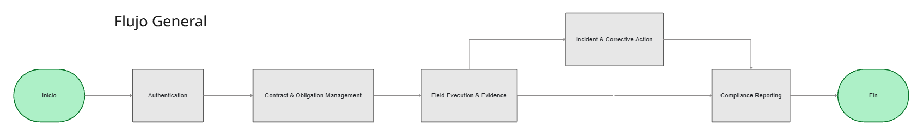
Para cada uno de los Bounded Contexts candidatos identificados, se elaboró un Bounded Context Canvas siguiendo un proceso iterativo de Context Overview Definition, Business Rules Distillation & Ubiquitous Language Definition, según las prácticas de Domain-Driven Design. A continuación, se presentan los canvases elaborados:
Authentication:
Gestiona la identificación, verificación y autorización de operarios y supervisores dentro del sistema.
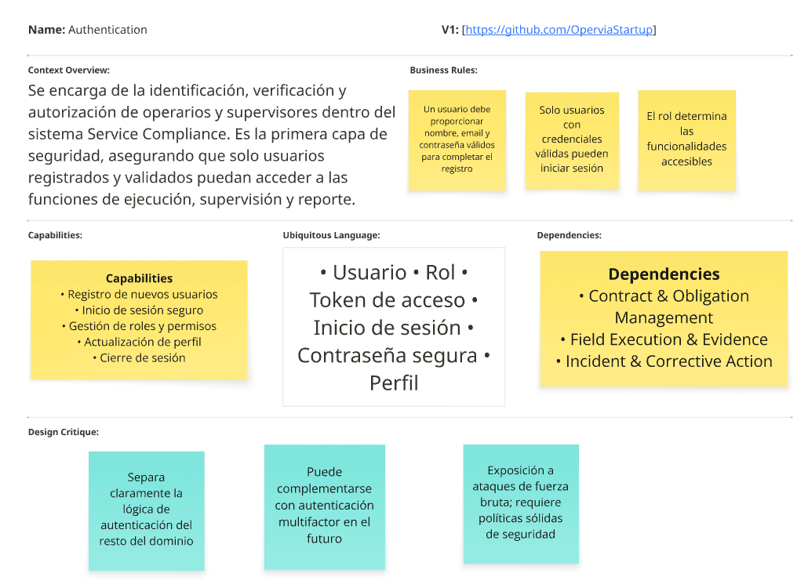
Contract & Obligation Management:
Gestiona el registro de contratos de servicio y la traducción de sus condiciones en obligaciones operativas.
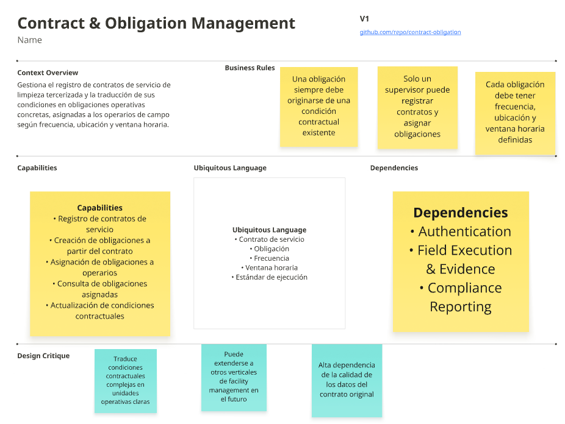
Field Execution & Evidence:
Core domain de la solución. Gestiona la ejecución de obligaciones en campo y la captura de evidencia, incluyendo soporte offline.
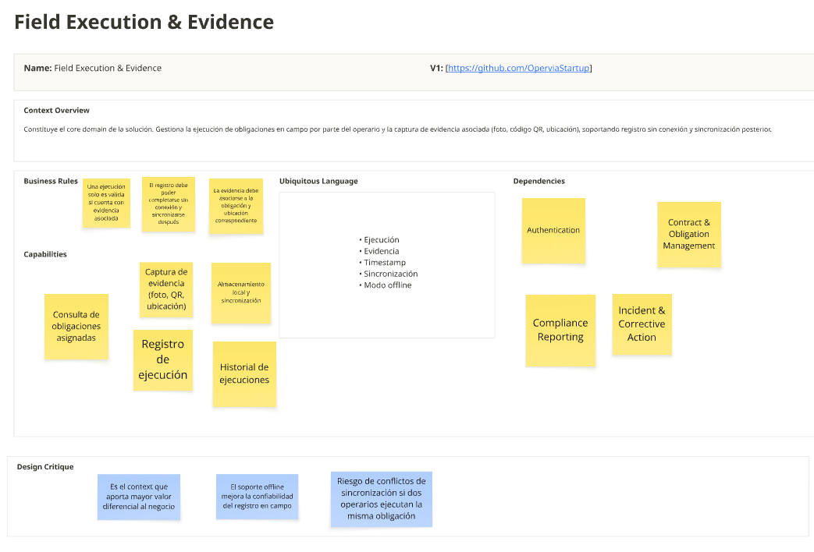
Incident & Corrective Action:
Gestiona la evaluación de SLA, detección de incumplimientos y el ciclo de vida de incidencias y acciones correctivas.
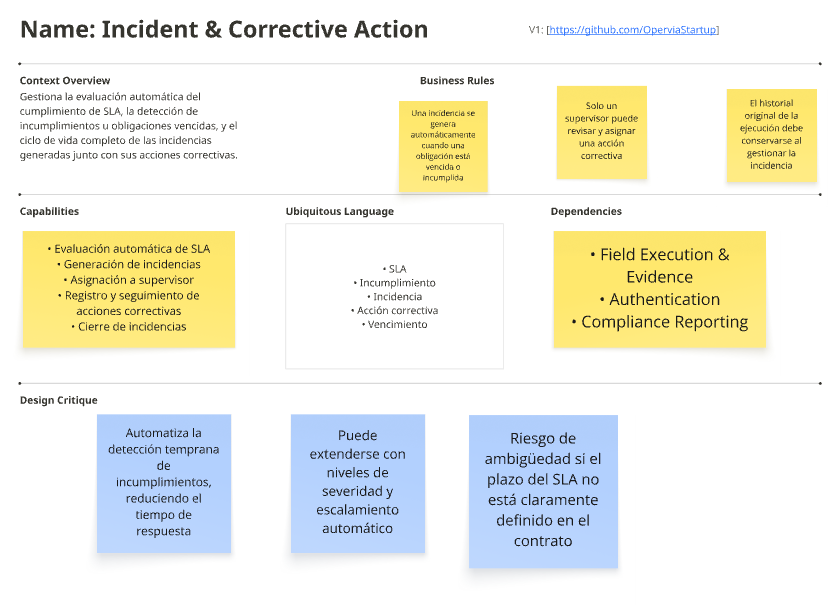
Compliance Reporting:
Consolida información de los demás contextos para la generación de reportes de cumplimiento y notificaciones.
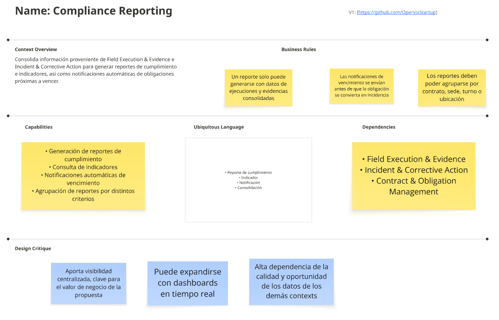
A partir de los Bounded Context Canvases elaborados, el equipo desarrolló un Context Map para visualizar las relaciones estructurales entre los contextos identificados, aplicando los patrones de relación descritos por Newman (2015): Customer/Supplier, Partnership, Shared Kernel, Conformist, Anti-Corruption Layer y Open Host Service.
Durante el proceso se discutieron alternativas de diseño, entre ellas: mover la evaluación de SLA desde Field Execution & Evidence hacia Incident & Corrective Action (descartado por generar dependencias circulares), consolidar Authentication y Contract & Obligation Management (descartado para mantener separación de intereses) e implementar una anti-corruption layer entre los contextos (descartado en favor de una arquitectura más simple en la fase inicial).
Como resultado de esta discusión, se estableció el siguiente Context Map:
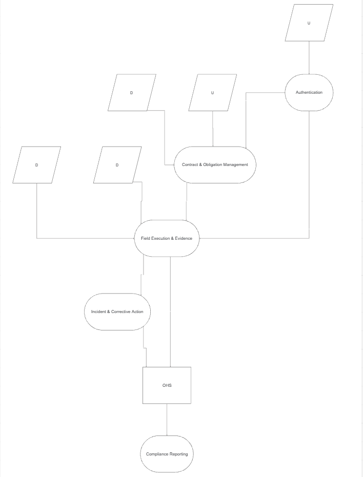
Aplicando el C4 Model, el equipo elaboró la representación de la arquitectura de software de la solución, utilizando Structurizr como herramienta de Diagram-as-Code (Structurizr DSL).
El Context Diagram muestra el sistema Service Compliance como una caja central, rodeado de sus usuarios (Operario de campo y Supervisor) y los sistemas externos con los que interactúa (Servicio de Notificaciones).
El Operario de campo utiliza el sistema para consultar sus obligaciones asignadas, ejecutar el servicio y registrar evidencia. El Supervisor lo utiliza para supervisar el cumplimiento, gestionar incidencias y consultar reportes de cumplimiento.
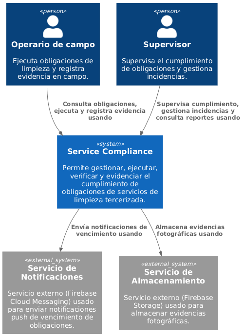
Container Diagram
El Container Diagram muestra los elementos de alto nivel de la arquitectura de software de Service Compliance y cómo se distribuyen las responsabilidades entre ellos. La solución está compuesta por una Mobile App (frontend), una API REST (backend), una base de datos relacional y servicios externos de notificación.
La Mobile App se comunica con la API REST mediante peticiones HTTPS/JSON, mientras que la API REST se comunica con dos servicios externos: un servicio de notificaciones para alertar sobre obligaciones vencidas y un servicio de ubicación para validar geolocalización en tiempo real.
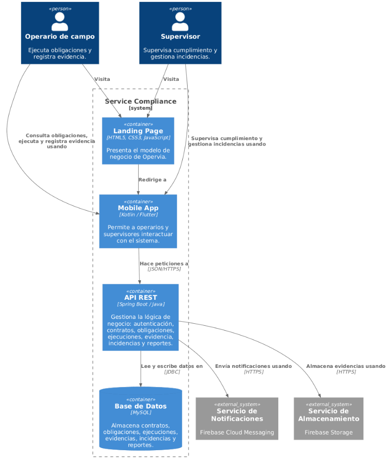
Deployment Diagram
El Deployment Diagram muestra la distribución física de los componentes del sistema Service Compliance sobre la infraestructura de hardware. La Mobile App se ejecuta en el dispositivo móvil del operario y del supervisor, la API REST se ejecuta en un servidor en la nube, y la base de datos se ejecuta en una instancia administrada en la nube.
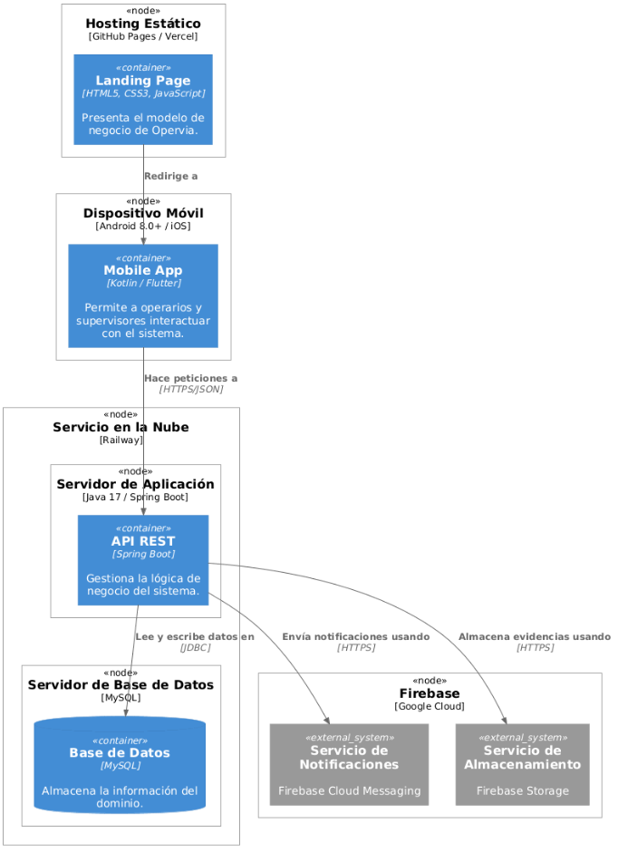
En esta sección se explica y presenta la propuesta para la perspectiva táctica del diseño de la solución para cada uno de los cinco Bounded Contexts identificados. Para cada contexto se documentan las clases de las capas de Domain, Interface, Application e Infrastructure a manera de diccionario (nombre, propósito, atributos, métodos y relaciones), junto con los diagramas de componentes (C4 Model) y los diagramas de código de nivel de detalle: Class Diagram del Domain Layer y Database Design Diagram.
Este Bounded Context gestiona la información y operaciones relacionadas con el registro, inicio de sesión y perfil de los usuarios del sistema (operarios y supervisores). Garantiza que el acceso a cada contexto del sistema sea realizado por un usuario válido y con el rol correspondiente.
El Domain Layer representa el core del contexto Authentication
mediante la entidad User y el rol asociado, encapsulando
las reglas de negocio de identificación y verificación de credenciales,
así como las reglas de negocio de creación de cuentas. A continuación,
se detalla el diccionario de clases del dominio:
| Clase | Categoría | Propósito | Atributos y métodos principales | Relaciones |
|---|---|---|---|---|
User |
Entity | Representa a un usuario registrado del sistema (operario o supervisor) que puede autenticarse. | Atributos: userId: Long, fullName: String,
email: String, phoneNumber: String,
role: Role, status: AccountStatus. Métodos:
getName(): String, getEmail(): String,
hasRole(r: Role): Boolean,
isActive(): Boolean. |
1..1 con Account; 1..* con Role (via
Account). |
Account |
Aggregate Root | Agrega la entidad User con sus credenciales y estado de
cuenta, garantizando la integridad del acceso. |
Atributos: accountId: Long,
username: String, passwordHash: String,
createdAt: DateTime, status: AccountStatus.
Métodos: authenticate(password: String): Boolean,
updatePassword(newHash: String): void,
suspend(): void, activate(): void. |
Root del agregado; contiene 1 User, 1..*
Credential. |
Role |
Value Object | Define el perfil de acceso del usuario en el sistema. | Atributos: code: RoleCode (OPERATOR,
SUPERVISOR). Métodos: isOperator(): Boolean,
isSupervisor(): Boolean. |
Usado por User. |
Credential |
Value Object | Encapsula las credenciales de acceso de la cuenta. | Atributos: username: String,
passwordHash: String. Métodos:
isValidPassword(candidate: String, hasher: IPasswordHasher): Boolean. |
Pertenecen al agregado Account. |
AccountStatus |
Enumeración | Estado del ciclo de vida de la cuenta. | Valores: ACTIVE, SUSPENDED,
INACTIVE. |
Usado por Account. |
AuthenticationService |
Domain Service | Orquesta la validación de credenciales y la creación segura de sesiones. | Métodos:
login(username: String, password: String): Session,
logout(sessionId: String): void. |
Depende de IAccountRepository y
ISessionRepository. |
UserAccountFactory |
Factory | Crea instancias válidas del agregado Account a partir
de datos de registro. |
Métodos: createAccount(userData, role): Account,
validateDuplicatedEmail(email): void. |
Crea Account y User. |
IAccountRepository |
Repository (interface) | Abstracción de persistencia de cuentas. | Métodos: findByUsername(username): Account,
findByEmail(email): User,
save(account): void. |
Implementado en Infrastructure Layer. |
ISessionRepository |
Repository (interface) | Abstracción de persistencia de sesiones. | Métodos: create(session): void,
invalidate(sessionId): void. |
Implementado en Infrastructure Layer. |
La Interface Layer expone los endpoints REST que permiten a los usuarios del sistema (operarios y supervisores) registrarse, iniciar sesión y consultar su perfil, así como consumir el estado de la sesión.
| Clase | Tipo | Endpoints | Responsabilidad |
|---|---|---|---|
AuthController |
Controller | POST /auth/register, POST /auth/login,
POST /auth/logout |
Recibe las solicitudes de registro, inicio y cierre de sesión y las delega en los command handlers correspondientes. |
UserProfileController |
Controller | GET /auth/me, PUT /auth/me |
Permite consultar y actualizar el perfil del usuario autenticado. |
La Application Layer maneja los flujos de proceso del contexto mediante Command Handlers y Event Handlers, aplicando las capabilities identificadas en el Bounded Context Canvas.
| Clase | Tipo | Operaciones | Eventos publicados/suscritos |
|---|---|---|---|
RegisterUserCommandHandler |
Command Handler | Procesa RegisterUserCommand (datos del usuario,
rol). |
Publica UserRegistered. |
LoginCommandHandler |
Command Handler | Procesa LoginCommand (username, password), delega en
AuthenticationService. |
Publica LoginSucceeded / LoginFailed. |
LogoutCommandHandler |
Command Handler | Procesa LogoutCommand (sessionId). |
Publica SessionClosed. |
UserRegisteredEventHandler |
Event Handler | Reacciona a UserRegistered para enviar notificación de
bienvenida vía el servicio de notificaciones. |
Suscribe UserRegistered. |
LoginSucceededEventHandler |
Event Handler | Reacciona a LoginSucceeded para auditar el acceso del
usuario. |
Suscribe LoginSucceeded. |
La Infrastructure Layer implementa los repositorios definidos en el Domain Layer y el acceso a servicios externos.
| Clase | Responsabilidad | Tecnología / Servicio externo |
|---|---|---|
AccountRepository |
Implementa IAccountRepository para persistir cuentas en
la base de datos relacional. |
Entity Framework Core + PostgreSQL. |
SessionRepository |
Implementa ISessionRepository para gestionar las
sesiones activas. |
EF Core + PostgreSQL. |
PasswordHasher |
Implementa IPasswordHasher para generar y validar
hashes de contraseñas. |
BCrypt / PBKDF2. |
JwtTokenGenerator |
Genera y valida tokens JWT de sesión. | System.IdentityModel.Tokens.Jwt. |
NotificationClient |
Envía notificaciones (bienvenida, alertas) mediante el servicio externo de notificaciones. | API REST externa de notificaciones. |
El siguiente diagrama de componentes (C4 Model) muestra la descomposición del container Mobile App y API REST para el Bounded Context Authentication, identificando los bloques estructurales del contexto y sus interacciones:
| Component | Container | Responsabilidad | Detalles de implementación |
|---|---|---|---|
LoginScreen |
Mobile App | Interfaz de inicio de sesión del usuario (operario/supervisor). | Vue 3 + TypeScript. |
RegisterScreen |
Mobile App | Interfaz de registro de nueva cuenta. | Vue 3 + TypeScript. |
AuthController |
API REST | Recibe peticiones HTTP de autenticación. | .NET 10 / ASP.NET Core Web API. |
AuthenticationApplicationService |
API REST | Orquesta los flujos de registro e inicio de sesión. | C# / .NET 10. |
AccountRepository |
API REST | Persistencia de cuentas y sesiones. | EF Core + PostgreSQL. |
PasswordHasher / JwtTokenGenerator |
API REST | Seguridad de credenciales y emisión de tokens. | BCrypt + JWT. |
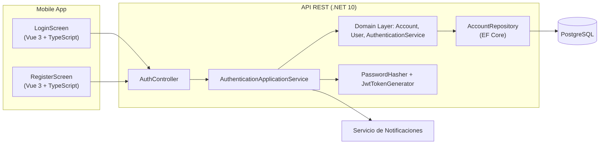
El siguiente diagrama de clases UML detalla las clases del Domain Layer del Bounded Context Authentication, incluyendo miembros (atributos y métodos con su scope), relaciones, dirección y multiplicidad:
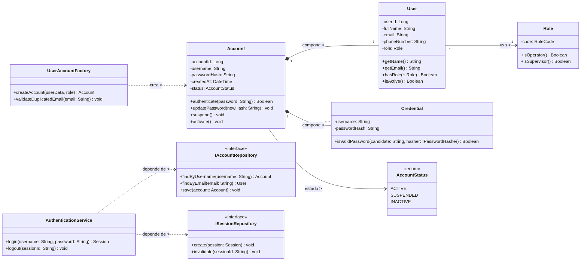
La siguiente tabla y el diagrama de base de datos muestran los objetos de persistencia del Bounded Context Authentication sobre una base de datos relacional:
| Tabla | Columnas | Constraints |
|---|---|---|
Users |
user_id (PK), full_name,
email (UQ), phone_number, role,
status |
PK: user_id. |
Accounts |
account_id (PK), user_id (FK),
username (UQ), password_hash,
created_at, status |
PK: account_id; FK: user_id →
Users(user_id). |
Sessions |
session_id (PK), account_id (FK),
token, created_at, expires_at,
is_active |
PK: session_id; FK: account_id →
Accounts(account_id). |
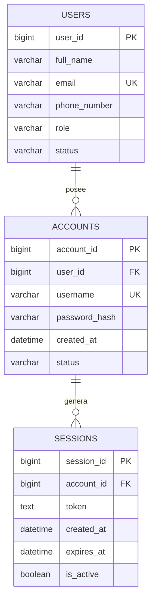
Este Bounded Context gestiona la información y operaciones relacionadas con los contratos de servicio y las obligaciones operativas derivadas de ellos, incluyendo su registro y asignación a los operarios de campo.
El Domain Layer representa el core del contexto mediante los
agregados ServiceContract y ServiceObligation,
encapsulando las reglas de negocio de registro de contratos, derivación
de obligaciones a partir de las condiciones contractuales y la
asignación de operarios. A continuación, se detalla el diccionario de
clases del dominio:
| Clase | Categoría | Propósito | Atributos y métodos principales | Relaciones |
|---|---|---|---|---|
ServiceContract |
Aggregate Root | Representa el contrato de servicio con un cliente, origen de las obligaciones operativas. | Atributos: contractId: Long,
clientName: String, startDate: DateTime,
endDate: DateTime, slaMinutes: Integer,
status: ContractStatus. Métodos:
activate(): void, suspend(): void,
terminate(): void,
hasObligations(): Boolean. |
1..* con ServiceObligation. |
ServiceObligation |
Aggregate Root | Representa una obligación operativa recurrente derivada del contrato y asignada a un operario. | Atributos: obligationId: Long,
contractId: Long, siteName: String,
address: Address, frequency: Frequency,
timeWindow: TimeWindow,
assignedOperator: Long,
status: ObligationStatus. Métodos:
assignOperator(operatorId: Long): void,
reschedule(window: TimeWindow): void,
markReady(): void. |
1..* pertenecen a 1 ServiceContract; 1..1 con
Address, Frequency,
TimeWindow. |
Address |
Value Object | Ubicación del sitio donde se ejecuta la obligación. | Atributos: street: String, city: String,
country: String(PER),
reference: String. Métodos:
fullAddress(): String. |
Usado por ServiceObligation. |
Frequency |
Value Object | Periodicidad de ejecución de la obligación. | Atributos: code: FrequencyCode (DAILY,
WEEKLY), days: Set<DayOfWeek>. Métodos:
isDueOn(date: DateTime): Boolean. |
Usado por ServiceObligation. |
TimeWindow |
Value Object | Ventana horaria permitida para ejecutar la obligación. | Atributos: start: Time, end: Time.
Métodos: isWithin(time: DateTime): Boolean. |
Usado por ServiceObligation. |
ContractStatus |
Enumeración | Estado del ciclo de vida del contrato. | Valores: DRAFT, ACTIVE,
SUSPENDED, TERMINATED. |
Usado por ServiceContract. |
ObligationStatus |
Enumeración | Estado del ciclo de vida de la obligación. | Valores: PENDING, READY,
OVERDUE. |
Usado por ServiceObligation. |
ObligationDerivator |
Domain Service | Deriva las obligaciones operativas a partir de las condiciones del contrato (sitio, frecuencia, ventana SLA). | Métodos:
deriveObligations(contract: ServiceContract): List<ServiceObligation>. |
Depende de IObligationRepository. |
ObligationFactory |
Factory | Crea instancias válidas de ServiceObligation
garantizando unicidad por contrato y frecuencia. |
Métodos:
create(contractId, site, frequency, window): ServiceObligation,
validateDuplicated(): void. |
Crea ServiceObligation. |
IContractRepository |
Repository (interface) | Abstracción de persistencia de contratos. | Métodos: findById(id): ServiceContract,
save(contract): void,
findActive(): List<ServiceContract>. |
Implementado en Infrastructure Layer. |
IObligationRepository |
Repository (interface) | Abstracción de persistencia de obligaciones. | Métodos: findById(id): ServiceObligation,
save(obligation): void,
findByContract(contractId): List<ServiceObligation>,
findDueOn(date): List<ServiceObligation>. |
Implementado en Infrastructure Layer. |
La Interface Layer expone los endpoints REST para registrar contratos, consultar obligaciones y asignar operarios, tanto para usuarios supervisor como para el operario móvil.
| Clase | Tipo | Endpoints | Responsabilidad |
|---|---|---|---|
ContractController |
Controller | POST /contracts, GET /contracts/{id},
PUT /contracts/{id} |
Gestiona el registro y ciclo de vida comercial de los contratos. |
ObligationController |
Controller | GET /obligations, GET /obligations/{id},
POST /obligations/{id}/assign |
Consulta obligaciones y realiza la asignación de operarios. |
La Application Layer maneja los flujos de negocio del contexto mediante Command Handlers y Event Handlers, aplicando las capabilities del Bounded Context Canvas.
| Clase | Tipo | Operaciones | Eventos publicados/suscritos |
|---|---|---|---|
RegisterContractCommandHandler |
Command Handler | Procesa RegisterContractCommand (cliente, fechas,
SLA). |
Publica ContractRegistered. |
ActivateContractCommandHandler |
Command Handler | Activa el contrato y delega la derivación de obligaciones. | Publica ContractActivated. |
DeriveObligationsCommandHandler |
Command Handler | Ejecuta ObligationDerivator para generar las
obligaciones del contrato. |
Publica ObligationsDerived. |
AssignObligationCommandHandler |
Command Handler | Asigna la obligación a un operario de campo. | Publica ObligationAssigned. |
ContractActivatedEventHandler |
Event Handler | Reacciona a ContractActivated disparando la derivación
de obligaciones. |
Suscribe ContractActivated. |
ObligationAssignedEventHandler |
Event Handler | Reacciona a ObligationAssigned para notificar al
operario móvil. |
Suscribe ObligationAssigned. |
La Infrastructure Layer implementa los repositorios del dominio y el acceso a servicios externos del contexto.
| Clase | Responsabilidad | Tecnología / Servicio externo |
|---|---|---|
ContractRepository |
Implementa IContractRepository para persistir
contratos. |
EF Core + PostgreSQL. |
ObligationRepository |
Implementa IObligationRepository para persistir
obligaciones. |
EF Core + PostgreSQL. |
ObligationDueJob |
Proceso programado que detecta obligaciones que superan su ventana
SLA y las marca como OVERDUE. |
Background Service (.NET 10) / Quartz. |
NotificationClient |
Notifica al operario la asignación de una obligación. | API REST externa de notificaciones. |
El siguiente diagrama de componentes (C4 Model) muestra la descomposición de los containers de la solución para el Bounded Context Contract & Obligation Management:
| Component | Container | Responsabilidad | Detalles de implementación |
|---|---|---|---|
ContractListScreen |
Mobile App (Supervisor) | Interfaz de registro y consulta de contratos. | Vue 3 + TypeScript. |
ContractController |
API REST | Recibe peticiones HTTP de contratos. | .NET 10 / ASP.NET Core Web API. |
ObligationController |
API REST | Recibe peticiones HTTP de obligaciones. | .NET 10 / ASP.NET Core Web API. |
ContractApplicationService |
API REST | Orquesta registro, activación y derivación de obligaciones. | C# / .NET 10. |
ContractRepository /
ObligationRepository |
API REST | Persistencia de contratos y obligaciones. | EF Core + PostgreSQL. |
ObligationDueJob |
API REST | Detecta obligaciones vencidas según SLA. | Background Service / Quartz. |
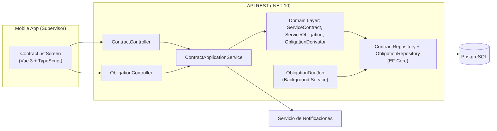
El siguiente diagrama de clases UML detalla las clases del Domain Layer del Bounded Context Contract & Obligation Management, incluyendo miembros, relaciones, dirección y multiplicidad:
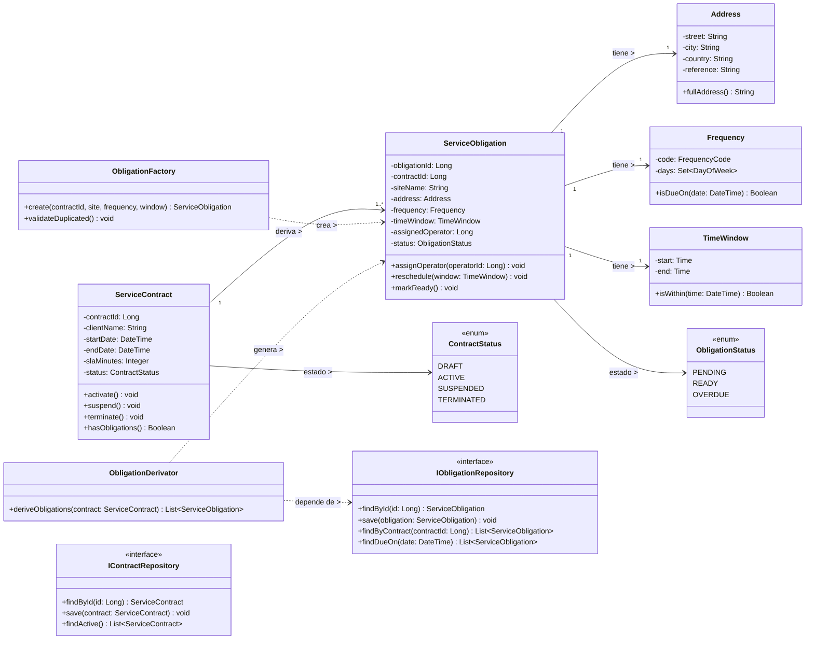
La siguiente tabla y el diagrama de base de datos muestran los objetos de persistencia del Bounded Context Contract & Obligation Management sobre una base de datos relacional:
| Tabla | Columnas | Constraints |
|---|---|---|
ServiceContracts |
contract_id (PK), client_name,
start_date, end_date,
sla_minutes, status |
PK: contract_id. |
ServiceObligations |
obligation_id (PK), contract_id (FK),
site_name, street, city,
country, reference, frequency,
time_window_start, time_window_end,
assigned_operator_id, status |
PK: obligation_id; FK: contract_id →
ServiceContracts(contract_id). |
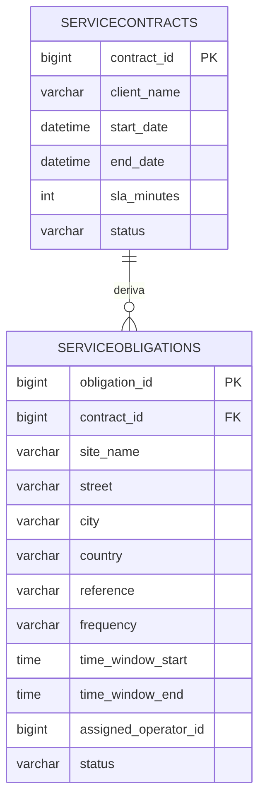
Este Bounded Context gestiona la ejecución de obligaciones en campo y la captura de evidencia asociada (foto, código QR, ubicación), incluyendo el soporte de registro sin conexión y su posterior sincronización. Constituye el core domain de la solución.
El Domain Layer representa el core de la solución mediante el
agregado ObligationExecution, que agrupa la evidencia
capturada durante la ejecución y coordina las reglas de negocio de
cierre de ejecución (validación de evidencia mínima, geolocalización y
registro offline).
| Clase | Categoría | Propósito | Atributos y métodos principales | Relaciones |
|---|---|---|---|---|
ObligationExecution |
Aggregate Root | Representa la ejecución de una obligación por parte de un operario, agrupando la evidencia capturada. | Atributos: executionId: Long,
obligationId: Long, operatorId: Long,
startedAt: DateTime, completedAt: DateTime,
status: ExecutionStatus, isOffline: Boolean.
Métodos: start(): void,
registerEvidence(e: Evidence): void,
complete(): void, markOffline(): void,
isComplete(): Boolean. |
1..* con Evidence. |
Evidence |
Entity | Representa una pieza de evidencia de la ejecución (foto, código QR o ubicación). | Atributos: evidenceId: Long,
executionId: Long, type: EvidenceType,
url: String, capturedAt: DateTime,
location: GeoLocation. Métodos:
isValid(): Boolean, type(): EvidenceType. |
Pertenecen a 1 ObligationExecution. |
EvidenceType |
Enumeración | Tipo de evidencia capturada. | Valores: PHOTO, QR_CODE,
LOCATION. |
Usado por Evidence. |
ExecutionStatus |
Enumeración | Estado del ciclo de vida de la ejecución. | Valores: PENDING, IN_PROGRESS,
COMPLETED, SYNCED. |
Usado por ObligationExecution. |
GeoLocation |
Value Object | Coordenadas de la ubicación donde se registró la evidencia. | Atributos: latitude: Double,
longitude: Double, accuracy: Double. Métodos:
isNear(expected: GeoLocation, radiusM: Double): Boolean. |
Usado por Evidence. |
OfflineBatch |
Value Object | Identifica el lote de registros capturados sin conexión para su sincronización. | Atributos: batchId: UUID,
createdAt: DateTime, pendingCount: Integer.
Métodos: add(execution: ObligationExecution): void. |
Agrupa ObligationExecution. |
ExecutionRegistrar |
Domain Service | Orquesta el inicio, el registro de evidencia y el cierre de la ejecución, validando la evidencia mínima requerida. | Métodos:
start(obligationId, operator): ObligationExecution,
complete(execution): void,
validateEvidence(execution): Boolean. |
Depende de IExecutionRepository e
IEvidenceRepository. |
EvidenceValidator |
Domain Service | Valida la calidad y requisitos de la evidencia capturada (presencia obligatoria de foto, QR y ubicación). | Métodos:
validate(evidence: Evidence): ValidationResult. |
Depende de Evidence. |
IExecutionRepository |
Repository (interface) | Abstracción de persistencia de ejecuciones. | Métodos: findById(id): ObligationExecution,
save(execution): void,
findByOperator(operatorId): List<ObligationExecution>,
findPendingSync(): List<ObligationExecution>. |
Implementado en Infrastructure Layer. |
IEvidenceRepository |
Repository (interface) | Abstracción de persistencia de evidencia. | Métodos: save(evidence): void,
findByExecution(executionId): List<Evidence>. |
Implementado en Infrastructure Layer. |
La Interface Layer expone los endpoints rest para que el operario móvil ejecute obligaciones y registre evidencia, así como el ingreso del sincronizador de registros offline.
| Clase | Tipo | Endpoints | Responsabilidad |
|---|---|---|---|
ExecutionController |
Controller | POST /executions,
POST /executions/{id}/complete,
GET /executions/operator/{operatorId} |
Gestiona el inicio y cierre de ejecuciones en campo. |
EvidenceController |
Controller | POST /executions/{id}/evidences,
GET /executions/{id}/evidences |
Registra y consulta la evidencia capturada. |
SyncController |
Controller | POST /sync/offline-batches,
GET /sync/status |
Recibe los lotes de registros capturados sin conexión para su sincronización. |
La Application Layer maneja los flujos de negocio del contexto (inicio, captura, cierre y sincronización) mediante Command Handlers y Event Handlers, aplicando las capabilities del núcleo de la solución.
| Clase | Tipo | Operaciones | Eventos publicados/suscritos |
|---|---|---|---|
StartExecutionCommandHandler |
Command Handler | Procesa StartExecutionCommand (obligación, operario) y
delega en ExecutionRegistrar. |
Publica ExecutionStarted. |
RegisterEvidenceCommandHandler |
Command Handler | Procesa RegisterEvidenceCommand (tipo, url, ubicación)
y valida la evidencia. |
Publica EvidenceRegistered. |
CompleteExecutionCommandHandler |
Command Handler | Procesa CompleteExecutionCommand validando la evidencia
mínima y cerrando la ejecución. |
Publica ExecutionCompleted. |
SyncOfflineBatchCommandHandler |
Command Handler | Procesa SyncOfflineBatchCommand para sincronizar
ejecuciones registradas sin conexión. |
Publica OfflineBatchSynced. |
ExecutionStartedEventHandler |
Event Handler | Reacciona a ExecutionStarted para notificar el inicio
de la ejecución. |
Suscribe ExecutionStarted. |
ExecutionCompletedEventHandler |
Event Handler | Reacciona a ExecutionCompleted para publicar el evento
de dominio hacia el contexto Incident & Corrective Action
(evaluación SLA) y Compliance Reporting (consolidación). |
Suscribe ExecutionCompleted; publica integración. |
La Infrastructure Layer implementa los repositorios del dominio, el almacenamiento de archivos de evidencia y el acceso a recursos del dispositivo móvil y servicios externos.
| Clase | Responsabilidad | Tecnología / Servicio externo |
|---|---|---|
ExecutionRepository |
Implementa IExecutionRepository para persistir
ejecuciones. |
EF Core + PostgreSQL. |
EvidenceRepository |
Implementa IEvidenceRepository para persistir
evidencia. |
EF Core + PostgreSQL. |
LocalExecutionStore |
Almacena las ejecuciones y evidencia capturadas sin conexión en el dispositivo. | SQLite local (dispositivo móvil). |
MediaStorageService |
Almacena las imágenes (fotos) de evidencia. | Bucket de almacenamiento (S3). |
QrCodeReader |
Acceso al componente de lectura de códigos QR en la cámara. | Librería nativa (ZXing / CameraX). |
GeolocationService |
Acceso al GPS del dispositivo para registrar la ubicación. | APIs de ubicación del dispositivo. |
El siguiente diagrama de componentes (C4 Model) muestra la descomposición de los containers de la solución para el Bounded Context Field Execution & Evidence (core domain):
| Component | Container | Responsabilidad | Detalles de implementación |
|---|---|---|---|
ExecutionScreen |
Mobile App (Operario) | Interfaz de consulta, inicio y cierre de ejecución de la obligación. | Vue 3 + TypeScript. |
EvidenceCaptureScreen |
Mobile App (Operario) | Captura de foto, lectura de QR y geolocalización. | Vue 3 + TypeScript + librerías nativas. |
LocalExecutionStore |
Mobile App (Operario) | Persistencia offline de ejecuciones y evidencia. | SQLite local. |
ExecutionController / EvidenceController /
SyncController |
API REST | Reciben las peticiones de ejecución, evidencia y sincronización. | .NET 10 / ASP.NET Core Web API. |
ExecutionApplicationService |
API REST | Orquesta inicio, registro de evidencia, cierre y sincronización. | C# / .NET 10. |
ExecutionRepository /
EvidenceRepository |
API REST | Persistencia de ejecuciones y evidencia. | EF Core + PostgreSQL. |
MediaStorageService |
API REST | Almacena las fotos de evidencia. | Amazon S3. |
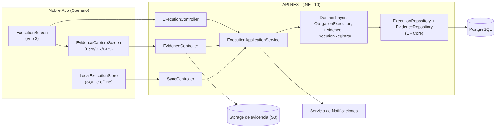
El siguiente diagrama de clases UML detalla las clases del Domain Layer del Bounded Context Field Execution & Evidence, incluyendo miembros, relaciones, dirección y multiplicidad:
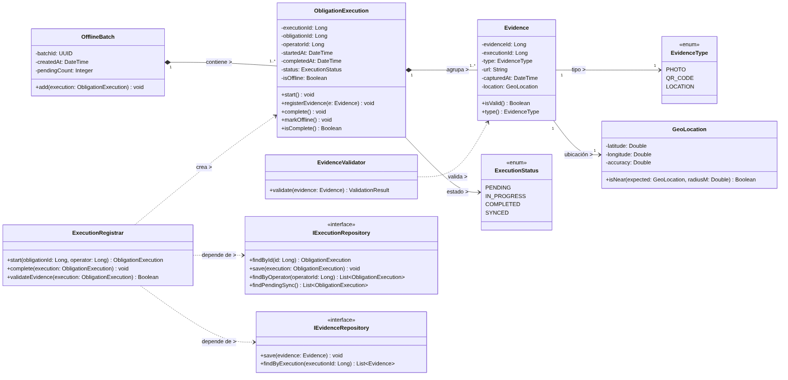
La siguiente tabla y el diagrama de base de datos muestran los objetos de persistencia del Bounded Context Field Execution & Evidence sobre una base de datos relacional:
| Tabla | Columnas | Constraints |
|---|---|---|
ObligationExecutions |
execution_id (PK), obligation_id (FK),
operator_id, started_at,
completed_at, status,
is_offline |
PK: execution_id; FK: obligation_id →
ServiceObligations(obligation_id). |
Evidences |
evidence_id (PK), execution_id (FK),
type, url, captured_at,
latitude, longitude,
accuracy |
PK: evidence_id; FK: execution_id →
ObligationExecutions(execution_id). |
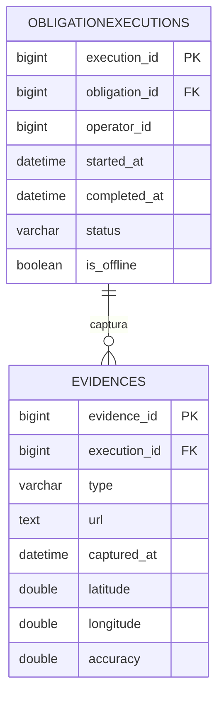
Este Bounded Context gestiona la evaluación del cumplimiento de SLA, la detección de incumplimientos y el ciclo de vida de las incidencias generadas junto con sus acciones correctivas asignadas por el supervisor.
El Domain Layer representa el core del contexto mediante el agregado
Incident, que agrupa las acciones correctivas asociadas y
encapsula las reglas de negocio de evaluación de SLA, apertura,
resolución y cierre de incidencias.
| Clase | Categoría | Propósito | Atributos y métodos principales | Relaciones |
|---|---|---|---|---|
Incident |
Aggregate Root | Representa una incidencia generada ante un incumplimiento de la obligación, con su ciclo de vida completo. | Atributos: incidentId: Long,
obligationId: Long, type: IncidentType,
severity: Severity, description: String,
openedAt: DateTime, status: IncidentStatus.
Métodos: open(): void,
assignAction(action: CorrectiveAction): void,
resolve(): void, close(): void. |
1..* con CorrectiveAction. |
CorrectiveAction |
Entity | Representa la acción correctiva asignada al operario por el supervisor para subsanar la incidencia. | Atributos: actionId: Long,
incidentId: Long, description: String,
assignedOperatorId: Long, dueDate: DateTime,
status: ActionStatus. Métodos:
assign(operatorId: Long): void,
complete(): void. |
Pertenecen a 1 Incident. |
ComplianceResult |
Value Object | Resultado de la evaluación SLA sobre la ejecución de una obligación. | Atributos: executionId: Long,
isCompliant: Boolean,
deviationMinutes: Integer,
evaluatedAt: DateTime. Métodos:
isCompliant(): Boolean. |
Resultado del SlaEvaluator. |
IncidentType |
Enumeración | Tipo de incidencia detectada. | Valores: SLA_BREACH, EVIDENCE_MISSING,
GEO_MISMATCH. |
Usado por Incident. |
Severity |
Enumeración | Nivel de severidad de la incidencia. | Valores: LOW, MEDIUM,
HIGH. |
Usado por Incident. |
IncidentStatus |
Enumeración | Estado del ciclo de vida de la incidencia. | Valores: OPEN, ACTION_ASSIGNED,
RESOLVED, CLOSED. |
Usado por Incident. |
ActionStatus |
Enumeración | Estado de la acción correctiva. | Valores: PENDING, IN_PROGRESS,
COMPLETED. |
Usado por CorrectiveAction. |
SlaEvaluator |
Domain Service | Evalúa si una ejecución cumplió la ventana SLA del contrato. | Métodos:
evaluate(execution, contract): ComplianceResult. |
Depende de IExecutionDataProvider. |
IncidentFactory |
Factory | Crea instancias válidas de Incident a partir de un
ComplianceResult incumplido. |
Métodos:
createFromNonCompliance(result: ComplianceResult): Incident. |
Crea Incident. |
IIncidentRepository |
Repository (interface) | Abstracción de persistencia de incidencias. | Métodos: findById(id): Incident,
save(incident): void,
findOpen(): List<Incident>. |
Implementado en Infrastructure Layer. |
ICorrectiveActionRepository |
Repository (interface) | Abstracción de persistencia de acciones correctivas. | Métodos: save(action): void,
findByIncident(incidentId): List<CorrectiveAction>. |
Implementado en Infrastructure Layer. |
La Interface Layer expone los endpoints rest para que el supervisor consulte, asigne y resuelva incidencias y acciones correctivas, así como el ingreso de la evaluación automática de SLA.
| Clase | Tipo | Endpoints | Responsabilidad |
|---|---|---|---|
IncidentController |
Controller | GET /incidents, GET /incidents/{id},
POST /incidents/{id}/resolve |
Consulta y gestiona el ciclo de vida de las incidencias. |
CorrectiveActionController |
Controller | POST /incidents/{id}/actions,
PUT /actions/{id}/complete |
Asigna y finaliza las acciones correctivas. |
SlaEvaluationConsumer |
Consumer | Consume el evento ExecutionCompleted para disparar la
evaluación SLA. |
Suscriptor del bus de eventos de integración. |
La Application Layer maneja los flujos de negocio del contexto (evaluación, apertura, asignación y resolución) mediante Command Handlers y Event Handlers.
| Clase | Tipo | Operaciones | Eventos publicados/suscritos |
|---|---|---|---|
EvaluateSlaCommandHandler |
Command Handler | Procesa EvaluateSlaCommand (ejecución, contrato) y
delega en SlaEvaluator. |
Publica SlaEvaluated. |
RegisterIncidentCommandHandler |
Command Handler | Procesa RegisterIncidentCommand con el resultado de
incumplimiento y crea el Incident mediante
IncidentFactory. |
Publica IncidentOpened. |
AssignCorrectiveActionCommandHandler |
Command Handler | Procesa AssignCorrectiveActionCommand (incidencia,
operario, tarea). |
Publica CorrectiveActionAssigned. |
ResolveIncidentCommandHandler |
Command Handler | Procesa ResolveIncidentCommand al completarse la acción
correctiva. |
Publica IncidentResolved. |
CloseIncidentCommandHandler |
Command Handler | Procesa CloseIncidentCommand para el cierre definitivo
de la incidencia. |
Publica IncidentClosed. |
ExecutionCompletedEventHandler |
Event Handler | Reacciona al evento ExecutionCompleted del contexto
Field Execution & Evidence y dispara la evaluación SLA. |
Suscribe ExecutionCompleted; publica
EvaluateSlaCommand. |
SlaEvaluatedEventHandler |
Event Handler | Reacciona a SlaEvaluated; si el resultado es no
conforme, dispara el registro de la incidencia. |
Suscribe SlaEvaluated. |
IncidentResolvedEventHandler |
Event Handler | Reacciona a IncidentResolved para notificar al
supervisor. |
Suscribe IncidentResolved. |
La Infrastructure Layer implementa los repositorios del dominio, la lectura de datos de ejecución para la evaluación SLA y el acceso al servicio externo de notificaciones.
| Clase | Responsabilidad | Tecnología / Servicio externo |
|---|---|---|
IncidentRepository |
Implementa IIncidentRepository para persistir
incidencias. |
EF Core + PostgreSQL. |
CorrectiveActionRepository |
Implementa ICorrectiveActionRepository para persistir
acciones correctivas. |
EF Core + PostgreSQL. |
ExecutionDataProvider |
Implementa IExecutionDataProvider obteniendo datos de
ejecución del contexto Field Execution & Evidence para la evaluación
SLA. |
Lectura sobre la base de datos del contexto / API. |
EventBus |
Consume y publica los eventos de integración del contexto. | RabbitMQ / MassTransit. |
NotificationClient |
Notifica al supervisor la apertura y resolución de incidencias. | API REST externa de notificaciones. |
El siguiente diagrama de componentes (C4 Model) muestra la descomposición de los containers de la solución para el Bounded Context Incident & Corrective Action:
| Component | Container | Responsabilidad | Detalles de implementación |
|---|---|---|---|
IncidentsScreen |
Mobile App (Supervisor) | Interfaz de consulta de incidencias y acciones correctivas. | Vue 3 + TypeScript. |
IncidentController /
CorrectiveActionController |
API REST | Reciben las peticiones de incidencias y acciones correctivas. | .NET 10 / ASP.NET Core Web API. |
IncidentApplicationService |
API REST | Orquesta evaluación, apertura, asignación y resolución. | C# / .NET 10. |
SlaEvaluator |
API REST | Evalúa el cumplimiento SLA de la ejecución. | C# / .NET 10. |
IncidentRepository /
CorrectiveActionRepository |
API REST | Persistencia de incidencias y acciones. | EF Core + PostgreSQL. |
EventBus |
API REST | Consume ExecutionCompleted y publica eventos de
negocio. |
RabbitMQ / MassTransit. |
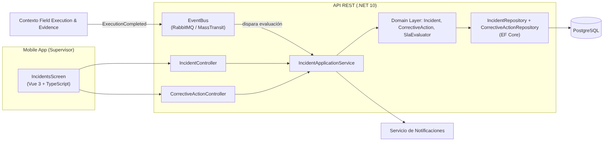
El siguiente diagrama de clases UML detalla las clases del Domain Layer del Bounded Context Incident & Corrective Action, incluyendo miembros, relaciones, dirección y multiplicidad:
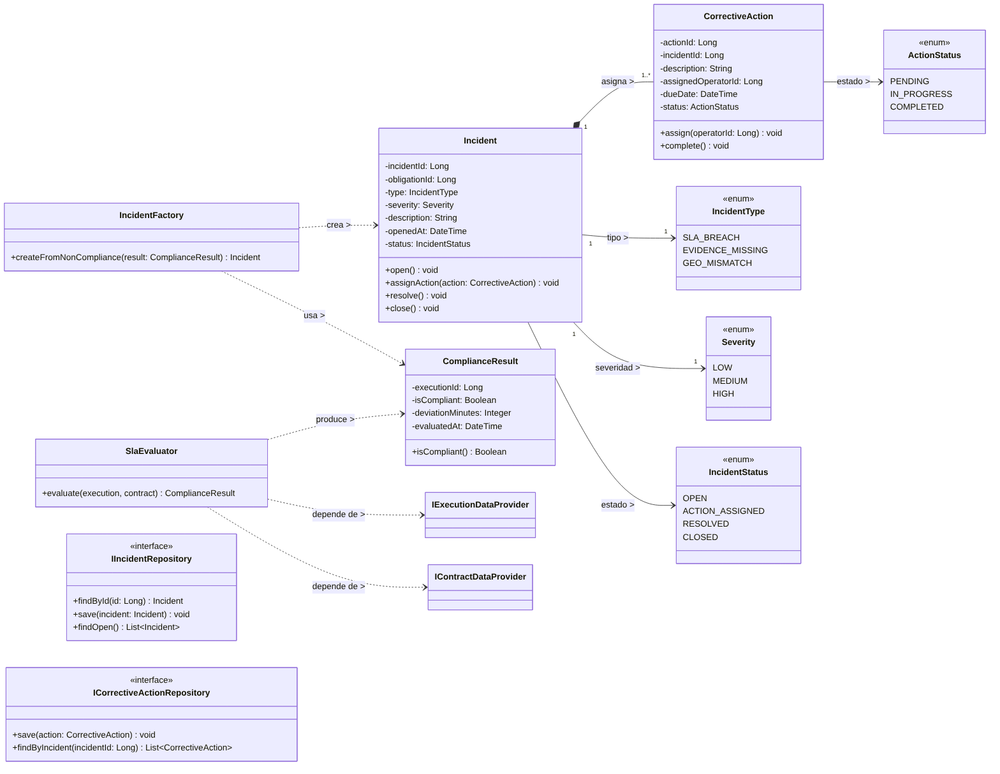
La siguiente tabla y el diagrama de base de datos muestran los objetos de persistencia del Bounded Context Incident & Corrective Action sobre una base de datos relacional:
| Tabla | Columnas | Constraints |
|---|---|---|
Incidents |
incident_id (PK), obligation_id (FK),
type, severity, description,
opened_at, status |
PK: incident_id; FK: obligation_id →
ServiceObligations(obligation_id). |
CorrectiveActions |
action_id (PK), incident_id (FK),
description, assigned_operator_id,
due_date, status |
PK: action_id; FK: incident_id →
Incidents(incident_id). |
SlaEvaluations |
evaluation_id (PK), execution_id (FK),
is_compliant, deviation_minutes,
evaluated_at |
PK: evaluation_id; FK: execution_id →
ObligationExecutions(execution_id). |
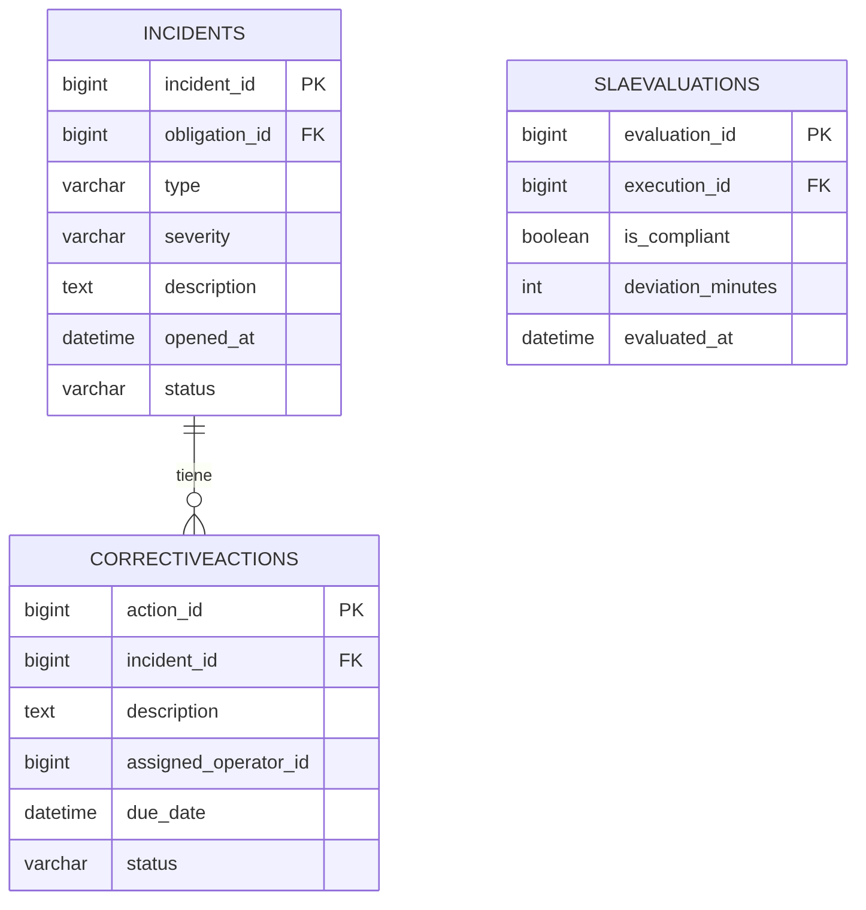
Este Bounded Context consolida información proveniente de los demás contextos para la generación de reportes de cumplimiento e indicadores, así como el envío de notificaciones automáticas de vencimientos y cambios de estado.
El Domain Layer representa el core del contexto mediante el agregado
ComplianceReport, que agrupa los indicadores de
cumplimiento calculados a partir de la información consolidada de
ejecuciones e incidencias.
| Clase | Categoría | Propósito | Atributos y métodos principales | Relaciones |
|---|---|---|---|---|
ComplianceReport |
Aggregate Root | Representa un reporte de cumplimiento correspondiente a un contrato en un período determinado. | Atributos: reportId: Long,
contractId: Long, period: ReportPeriod,
generatedAt: DateTime, status: ReportStatus,
overallRate: Double. Métodos:
generate(): void,
addIndicator(i: ReportIndicator): void,
markAsSent(): void. |
1..* con ReportIndicator. |
ReportIndicator |
Entity | Representa un indicador calculado del reporte (ej. tasa de cumplimiento, incidencias abiertas). | Atributos: indicatorId: Long,
reportId: Long, name: String,
value: Double, unit: String. Métodos:
value(): Double. |
Pertenecen a 1 ComplianceReport. |
ReportPeriod |
Value Object | Período de cobertura del reporte. | Atributos: startDate: DateTime,
endDate: DateTime. Métodos:
contains(date: DateTime): Boolean. |
Usado por ComplianceReport. |
ReportStatus |
Enumeración | Estado del ciclo de vida del reporte. | Valores: GENERATING, READY,
SENT. |
Usado por ComplianceReport. |
ReportConsolidator |
Domain Service | Consolida la información de ejecuciones e incidencias y calcula los indicadores del reporte. | Métodos:
consolidate(contractId, period): CompositionRoot,
computeOverallRate(data): Double. |
Depende de la data consolidada de los contextos de ejecución e incidencias. |
ReportFactory |
Factory | Crea instancias válidas de ComplianceReport para un
contrato y período. |
Métodos: create(contractId, period): ComplianceReport,
validateNoDuplicate(period): void. |
Crea ComplianceReport. |
IComplianceReportRepository |
Repository (interface) | Abstracción de persistencia de reportes. | Métodos: findById(id): ComplianceReport,
save(report): void,
findByContractAndPeriod(contractId, period): ComplianceReport. |
Implementado en Infrastructure Layer. |
IReportIndicatorRepository |
Repository (interface) | Abstracción de persistencia de indicadores. | Métodos: save(indicator): void,
findByReport(reportId): List<ReportIndicator>. |
Implementado en Infrastructure Layer. |
La Interface Layer expone los endpoints rest para que el supervisor consulte reportes e indicadores, así como el ingreso de datos consolidados de los demás contextos.
| Clase | Tipo | Endpoints | Responsabilidad |
|---|---|---|---|
ReportController |
Controller | POST /reports, GET /reports/{id},
GET /reports/contract/{contractId} |
Genera y consulta reportes de cumplimiento. |
DashboardController |
Controller | GET /dashboard/summary,
GET /dashboard/trends |
Expone los indicadores de cumplimiento para el tablero del supervisor. |
ExecutionDataConsumer |
Consumer | Consume eventos de ejecuciones e incidencias para actualizar el repositorio de consolidación. | Suscriptor del bus de eventos de integración. |
La Application Layer maneja los flujos de negocio del contexto (generación, consolidación, publicación y notificaciones) mediante Command Handlers y Event Handlers.
| Clase | Tipo | Operaciones | Eventos publicados/suscritos |
|---|---|---|---|
GenerateReportCommandHandler |
Command Handler | Procesa GenerateReportCommand (contrato, período) y
delega en ReportConsolidator. |
Publica ReportGenerated. |
PublishReportCommandHandler |
Command Handler | Procesa PublishReportCommand para publicar el reporte
al supervisor. |
Publica ReportPublished. |
ScheduleNotificationCommandHandler |
Command Handler | Procesa ScheduleNotificationCommand para alertas de
vencimientos (obligaciones due) y cambios de estado. |
Publica NotificationScheduled. |
ExecutionCompletedEventHandler |
Event Handler | Reacciona a ExecutionCompleted y actualiza la
información de consolidación del contexto. |
Suscribe ExecutionCompleted. |
IncidentClosedEventHandler |
Event Handler | Reacciona a IncidentClosed y actualiza los indicadores
de cumplimiento. |
Suscribe IncidentClosed. |
ReportGeneratedEventHandler |
Event Handler | Reacciona a ReportGenerated para notificar al
supervisor la disponibilidad del reporte. |
Suscribe ReportGenerated. |
La Infrastructure Layer implementa los repositorios del dominio, el almacenamiento de datos consolidados y el acceso al servicio externo de notificaciones.
| Clase | Responsabilidad | Tecnología / Servicio externo |
|---|---|---|
ComplianceReportRepository |
Implementa IComplianceReportRepository para persistir
reportes. |
EF Core + PostgreSQL. |
ReportIndicatorRepository |
Implementa IReportIndicatorRepository para persistir
indicadores. |
EF Core + PostgreSQL. |
ConsolidatedDataStore |
Almacena la información consolidada de ejecuciones e incidencias para el cálculo de indicadores. | Vistas materializadas / tablas de consolidación. |
EventBus |
Consume los eventos de integración de los demás contextos. | RabbitMQ / MassTransit. |
NotificationClient |
Envía notificaciones de reportes disponibles y alertas de vencimiento. | API REST externa de notificaciones. |
El siguiente diagrama de componentes (C4 Model) muestra la descomposición de los containers de la solución para el Bounded Context Compliance Reporting:
| Component | Container | Responsabilidad | Detalles de implementación |
|---|---|---|---|
DashboardScreen |
Mobile App (Supervisor) | Interfaz de indicadores y reportes de cumplimiento. | Vue 3 + TypeScript. |
ReportController /
DashboardController |
API REST | Reciben las peticiones de reportes e indicadores. | .NET 10 / ASP.NET Core Web API. |
ReportApplicationService |
API REST | Orquesta generación, consolidación y publicación de reportes. | C# / .NET 10. |
ReportConsolidator |
API REST | Consolida datos de ejecuciones e incidencias y calcula indicadores. | C# / .NET 10. |
ComplianceReportRepository |
API REST | Persistencia de reportes e indicadores. | EF Core + PostgreSQL. |
EventBus |
API REST | Consume eventos de los demás contextos. | RabbitMQ / MassTransit. |
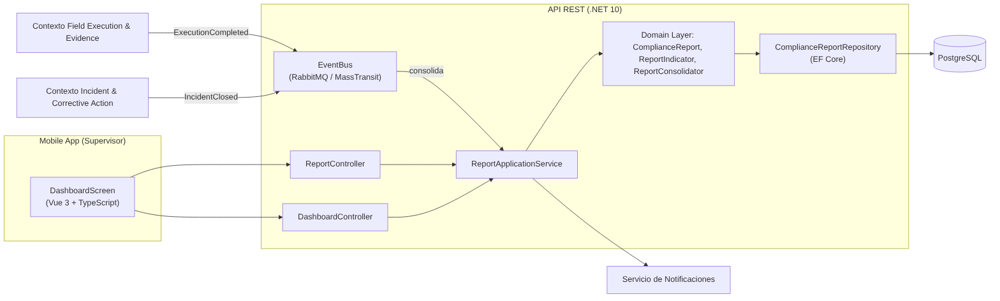
El siguiente diagrama de clases UML detalla las clases del Domain Layer del Bounded Context Compliance Reporting, incluyendo miembros, relaciones, dirección y multiplicidad:
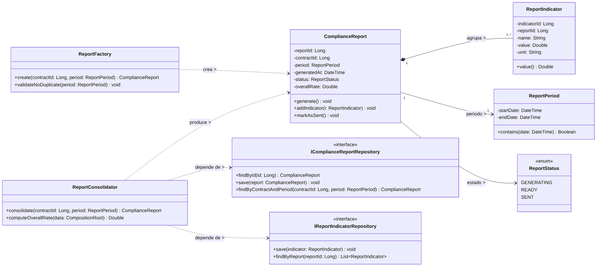
La siguiente tabla y el diagrama de base de datos muestran los objetos de persistencia del Bounded Context Compliance Reporting sobre una base de datos relacional:
| Tabla | Columnas | Constraints |
|---|---|---|
ComplianceReports |
report_id (PK), contract_id (FK),
period_start, period_end,
generated_at, status,
overall_rate |
PK: report_id; FK: contract_id →
ServiceContracts(contract_id). |
ReportIndicators |
indicator_id (PK), report_id (FK),
name, value, unit |
PK: indicator_id; FK: report_id →
ComplianceReports(report_id). |
Notifications |
notification_id (PK), report_id (FK),
recipient_id, type, sent_at,
status |
PK: notification_id; FK: report_id →
ComplianceReports(report_id). |
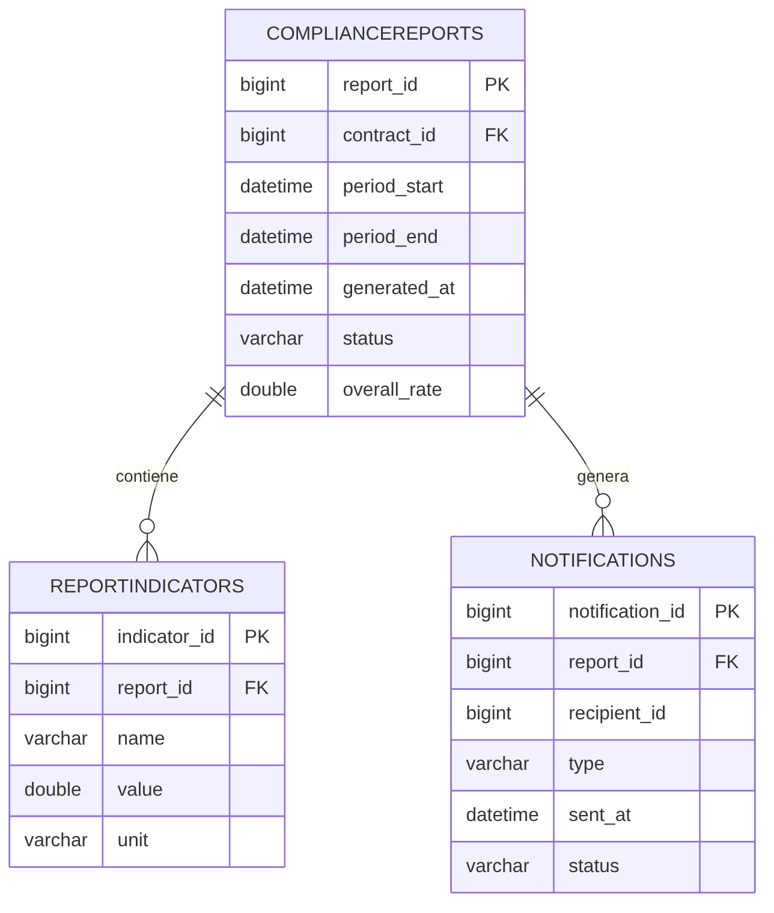